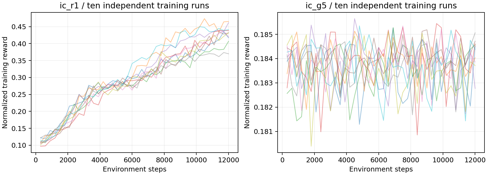
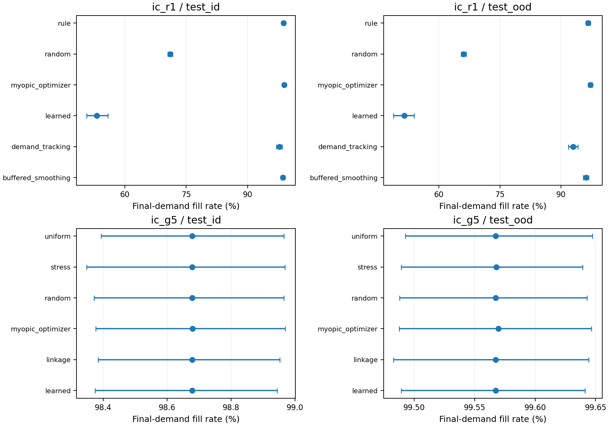
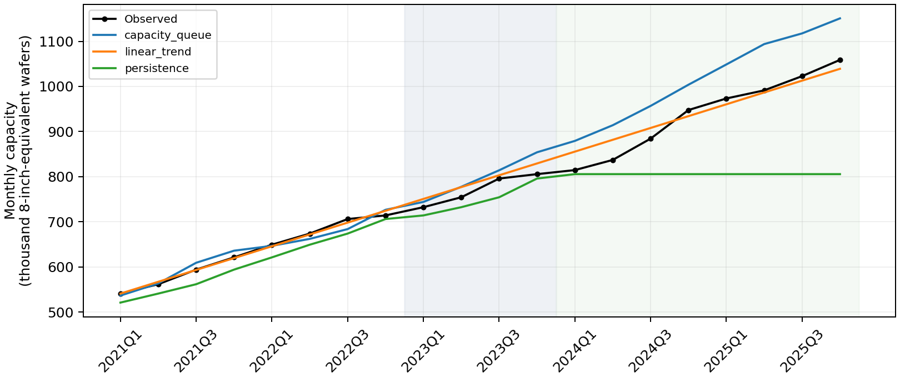
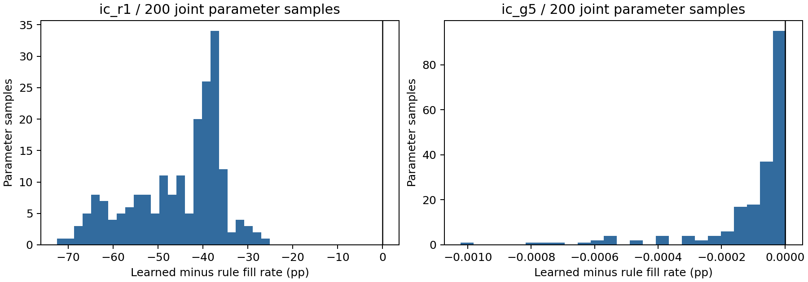

IC-EconGym: An Input–Output-Constrained Multi-Agent Testbed for Semiconductor Industrial Policy and Supply-Chain Resilience
中文题名： IC-EconGym：投入产出约束下的集成电路产业政策与供应链韧性多智能体测试平台
摘要
产业策略只有经过投入依赖、产能和交付约束，才能转化为实际供给。本文提出 IC-EconGym，以经收入分劈处理的 2020 年投入产出结构组织 13 个产业部门与 1 个政府智能体，保留其余国内部门、进口和最终需求边界，在统一结算下提供赋能、风险、治理三组共 15 项任务。平台以共同外生最终需求计量履约，区分核算量、AI 代理资料与未识别动态参数。新增实验覆盖 870 条任务诊断轨迹、20 个独立学习训练实例及 6,000 条锁定测试轨迹，并实施 23,400 条联合参数与替代配给评估和 600 条机制扫描。R1 部门 IPPO 的训练奖励提高，但同分布测试履约为 53.21%，低于既定规则的 98.77%；G5 政府 PPO 相对均匀配置的履约改善区间跨越零。联合实验中，库存平滑相对既定规则的排序在改变配给制度后反转。独立制造案例将同一容量队列函数映射到企业物理产能，2024—2025 年留出期误差优于持平基线而劣于线性趋势。分项计时与批量环境测试说明固定主体规模下的运行成本。结果支持平台的学习策略接入、奖励审计、结构诊断与局部外部检验能力；AI 代理缩放和全国动态参数仍属条件设定，不能据此推断现实政策因果效果。
关键词： 多智能体测试平台；投入产出约束；集成电路相关产业；供应链韧性；产业政策；机制诊断
1 Introduction
经济智能体的行动不能仅通过奖励函数中的加分项表示。扩产需要占用资源并等待投产，库存支持需要形成可用投入，部门产出还可能受到某一种上游产品限制。若这些约束没有进入环境转移，局部策略的高收益无法说明其提高了系统交付。对于集成电路相关产业，这一问题尤其突出：设计、制造、材料、设备与应用之间存在多种依赖，但宏观统计部门与工艺环节并非一一对应；部门总量、企业关系和产品交易额也具有不同的证据含义。
半导体行业的这一特征已有产业证据。OECD 的价值链研究把设计、制造、设备、材料和终端应用的联系置于全球专业化分工中；SIA 与 BCG 的行业报告同时讨论专业化的效率来源和关键环节集中带来的脆弱性 [1, 2]。美国商务部对 2021 年短缺的自愿调查还记录了重点芯片需求增长、买方库存下降与晶圆产能瓶颈并存的现象 [3]。这些资料说明需求、可用投入与产能需要共同建模，但其行业粒度、地域和计量单位不能直接移植到中国广义统计部门。
生产网络理论说明，部门特有冲击可以经直接与间接投入联系形成总体波动 [4]。动态投入产出模型进一步把需求、供给和库存纳入非均衡生产过程，并检验了冲击传播的预测能力 [5]。与此同时，EconGym 将多类经济角色与可替换策略组织为统一测试环境，以算法基准、现实贴合和运行效率支撑其平台主张 [6]。这两条研究路径为产业智能体实验提供了基础，但尚不能直接把通用家庭、银行或政府策略移植到具有分来源投入约束的产业部门，也不能把部门表直接解释为企业交易网络。
AI 赋能和产业政策也需要区分投入与已实现效果。吸收能力研究强调组织识别、吸收并应用外部知识的条件，技术—组织互补研究则说明技术投资需要配套资产 [7, 8, 9]。任务层效率向总量效应的转化还依赖受影响活动的覆盖范围 [10]。对于政策，近期产业政策综述强调测量、因果识别、实施治理和具体经济结构 [11]。因此，本文关注能力、订单与财政行动经过约束后产生的交付，而将现实政策有效性留给额外的行为识别与外部验证。
IC-EconGym 将部门核算结构转化为策略可作用的逐期环境。13 个相关部门分别提出生产计划、补库目标、价格调整和能力投入；政府在一次性总预算内选择支出渠道与部门配置。环境决定哪些计划能够生产、哪些交付可以到达，以及哪些项目只能在后续期生效。策略与经济结算分别实现，因而可在保持核算来源和观察权限一致的条件下替换策略、改变冲击和关闭机制。
本文围绕以下研究问题开展实验。
-
RQ1，能力转化的约束条件。 相同 AI 支出下，提高吸收能力何时改善最终交付，何时仅改变能力状态？
-
RQ2，策略响应与系统交付。 需求跟随、补库和供给通道选择如何改变内部订单，以及共同外生最终需求的履约？
-
RQ3，有限预算的配置效果。 均匀、后向关联度和短缺靶向在相同财政资源下产生多大差异，该差异是否依赖机制和进口用途分配？
-
RQ4，学习目标与验证范围。 学习奖励提高能否改善固定价格增加值与最终交付，局部容量规则在独立数据上的误差是否优于简单基线？
这些问题的共同要求是将“行动改变了状态”与“行动改善了交付”分开检验。平台据此提供三项贡献。第一，分来源的可执行投入约束。 国内、进口和其他国内部门边界分别形成可用投入，生产、交付、项目投产与财政行动处于统一时序。第二，可组合的任务与策略接口。 同一结算引擎支持 15 项任务及类型化部门、政府行动，参数和机制开关保存在可追踪配置中。第三，面向内生订单与非绑定机制的评估协议。 平台以共同最终需求计量履约，结合配对冲击、成本报告和机制关闭实验，识别策略差异的条件及无效干预。
本文研究对象是集成电路相关部门的条件机制实验。2020 年核算表提供基期用途和投入比例，细分结构包含收入分劈假设。本文将任务诊断、学习策略比较、制造容量外部案例、联合稳健性与运行性能组织为相互关联的证据。AI 工作簿用于构造异质性代理；其指标没有识别投入转化函数，全国模型的投资、库存和合同系数仍属情景值。模型内比较不解释为现实政策因果效应。
2 Related Work and Positioning
2.1 经济策略学习与测试平台
AI Economist 通过经济主体与规划者的两层深度多智能体强化学习研究税收设计，表明政策比较需要考虑主体对政策的响应 [12]。EconGym 进一步组织多角色和多任务，比较规则、学习及语言模型等策略，并考察跨政策协同 [6]。IC-EconGym 借鉴其角色、观察、行动、奖励和环境结算的分离方式，新增的研究对象是受投入来源、库存与产能约束的产业部门。原平台已训练的家庭或银行策略不构成本文部门基线；所有候选策略都必须适配本文的观察字段和行动结构。
新增算法实验使用 PPO 更新 [13]，分别训练 R1 部门参数共享 IPPO 和 G5 政府 PPO，并与合法随机、固定规则及单期代理优化比较。学习训练、验证和测试情景分别生成，保存训练实例、检查点和资源记录；实验设计参照强化学习经验研究对统计单位、预算与超参数报告的要求 [14]。该比较只覆盖两个任务，未进行语言模型调用、部门与政府联合学习或博弈均衡求解。规则策略的固定公式响应仍与学习策略区分。
这一实现属于计算经济学的规则主体路径。Tesfatsion 将经济过程表示为主体反复交互的动态系统，主体可以包含行为规则、属性与制度约束 [15]；Littman 的多主体框架则明确联合行动如何进入环境状态转移 [16]。本文沿用主体—行动—转移的组织方式，观察受角色权限限制，但不据此宣称已经求得博弈均衡或学习到经济行为。
2.2 投入产出结构与供应网络仿真
Acemoglu 等说明高阶投入依赖在部门冲击向总量波动的传导中具有重要作用 [4]。Pichler 等以动态投入产出模型表示行业供需冲击、库存和生产限制，并使用独立经济活动数据检验预测 [5]。本文沿用固定投入与库存约束的建模思路，重点提供策略接口、共同预算比较和机制诊断；没有完成与其同等的历史预测验证。
固定投入系数与 Leontief 关联分析提供了部门核算基础 [17]。Hallegatte 的 ARIO 模型进一步把产能和前后向传播用于灾害损失分析，说明重建需求只有经过产能约束才能转化为生产 [18]。Carvalho 等利用东日本大地震及企业关系数据识别了上下游冲击传播 [19]。这些研究支持在环境中保留投入依赖与产能，但理论网络、统计部门网络和观测企业网络分别支持不同层级的结论。
企业级供应链模型依赖更细的关系资料。Inoue 和 Todo 使用日本企业供应关系构建动态 ABM，并结合销售额与投入产出表推估交易权重 [20]。关系观测与交易额识别在该研究中也需区分。本文工作区的 206 家企业和 8,364 条候选边尚未具备保持部门核算总量的业务份额和逐产品权重，因此未载入当前生产转移。三个合成供给通道仅用于集中与拥堵实验。
库存与信息反馈属于另一层行为机制。Clark 和 Scarf 的多级库存研究表明，上游库存和交付提前期需要联动 [21]；Sterman 的实验研究讨论决策者对库存与反馈的误判 [22]；Lee 等将订单信息失真与终端销售区分，并分析牛鞭效应的多种来源 [23]。本文用这些研究解释补库和订单反馈的建模理由，具体系数仍由任务设定，且不把最终短缺变化直接称为牛鞭效应。
2.3 经济世界模型的系统边界
Han 等提出经济世界模型的能力阶梯与实现协议，将主体、环境、共演化、现实对齐和评估分开，并区分信念更新、行动、状态转移、聚合和制度演化 [24]。该文当前为 arXiv 预印本，本文借鉴的是其系统分类与诊断原则。IC-EconGym 已实现规则与离线训练策略的替换、环境执行和只读轨迹评价；未实现显式信念更新、持续在线学习、制度内生演化或在线数据纠正。政府在预算内选择支出属于行动，不构成制度自演化。
表 1 系统定位与证据边界
| 研究 | 核心对象 | 与本文相关的能力 | 本文采用或尚缺的部分 |
|---|---|---|---|
| EconGym [6] | 多角色经济任务与算法 | 模块化角色、跨任务策略比较、外部贴合及效率 | 采用接口组织；产业策略需重新实现 |
| AI Economist [12] | 主体与规划者共同学习 | 政策—主体响应及训练评估 | 已分别训练部门与政府；未共同训练两层策略 |
| 动态投入产出模型 [5] | 部门供需与库存传播 | 受投入约束的动态生产、独立预测检验 | 局部容量条件回放已检验；未完成全国动态预测检验 |
| 企业供应网络 ABM [20] | 实际企业关系与传播 | 库存、替代与细粒度关系 | 当前仅部门级，候选企业边不等于实际关系 |
| EWM 系统蓝图 [24] | 能力阶梯与实现协议 | 类型化接口及分层诊断 | 已实现执行、离线学习与局部对照；未实现共演化 |
模型报告参照 ODD 对实体、状态、时序、初始化、输入和子模型的要求 [25]，完整代码映射见附录 B。ODD 是描述与复现规范，不构成经济准确性的验证。
2.4 技术吸收、投资时滞与产业政策
Cohen 和 Levinthal 将吸收能力与既有知识及研发联系起来 [7]。Brynjolfsson 等关于组织资本和生产率 J 曲线的研究说明，通用技术的收益可能依赖互补投入与测量时序 [8, 9]。生成式 AI 的客服实证进一步发现，效果在经验和技能维度上具有异质性 [26]。本文据此区分采用存量、有效 AI 和交付绩效；部门级乘法转化式并非上述企业或劳动者研究估计出的函数。
Kydland 和 Prescott 的 time-to-build 研究为资本支出与可用生产资本之间的跨期分离提供了经典依据 [27]。Dosi 等在经济 ABM 中组织需求、创新、投资与政策反馈 [28]，Juhász 等则将产业政策的工具、实施与识别置于具体结构中讨论 [11]。本平台将投产队列与政府支出接口显式化，用于条件反事实；其财政权重和投产效率没有继承文献的经验估计。
2.5 产业粒度与模型验证
OECD 的半导体脆弱性研究指出，投入产出记录需要配合更细行业资料才能识别关键联系；设备资本购置也不能仅由中间使用矩阵表达 [29]。其晶圆产能研究按工艺、节点及经营模式区分产能与替代限制 [30]。这些分类为未来细化 H 机制提供方向，当前广义部门与合成通道仍保留自身统计边界。
验证方法同样需要分层。Sargent 区分概念模型、代码、运行结果与数据的有效性 [31]；Fagiolo 等讨论经济 ABM 中校准、经验事实与验证程序的关系 [32]。据此，本文分别报告核算与代码检查、模型内机制实验和独立制造容量案例。外部案例检验局部函数在物理单位上的误差，不以文献中的现实证据替代本环境的独立检验。
3 Data and Economic Boundary
3.1 部门划分与计量单位
输入是项目整理的 2020 年投入产出工作簿。原 42 部门经营业收入比例分劈形成 55 部门，其中前 13 个作为决策主体，其余 42 个为外部国内供给和需求边界。13 个主体包括材料、设备、电子投入、电子制造和应用部门，具体统计标签与分劈份额见附录 A。它们代表集成电路相关经济活动，并非 13 个分别观测的芯片工艺环节。第 8 部门仍是电子设备制造统计范围，H3 设计、H4 晶圆制造、H5 封测标签不能被解释为已识别的独立交易额。
金额单位为万元。令 $x_j$ 为年度基期产出，季度基准为 $q_j^0=x_j/4$。模型中的生产与投入是固定 2020 年价格的产出当量，不是晶圆片数、芯片颗数或物理产线吞吐。年度转季度采用四个等长期间，没有估计季节性。价格状态用于收益和价格诊断，未用于重新估计投入系数。
3.2 国内与进口投入
记国内和进口中间使用为 $z^d_{rj}$、$z^m_{rj}$，国内最终使用为 $y^d_{rc}$，其中 $r=1,\ldots,55$、$j=1,\ldots,13$。固定投入系数为
\[ a^d_{rj}=\frac{z^d_{rj}}{x_j},\qquad a^m_{rj}=\frac{z^m_{rj}}{x_j}. \tag{1} \]
13 部门向其余国内部门销售的季度基准为 $X_r^0=\sum_{j=14}^{55}z^d_{rj}/4$，最终需求基准为 $F_r^0=\sum_c y^d_{rc}/4$。因此研究部门的基期产品用途满足
\[ q_r^0=\sum_{j=1}^{13}\frac{z^d_{rj}}4+X_r^0+F_r^0, \qquad x_j=\sum_{r=1}^{55}(z^d_{rj}+z^m_{rj})+VA_j^0. \tag{2} \]
现有资料没有识别每种进口产品的实际使用者。平台提供比例分配、优先中间使用、优先最终使用三种平衡假设，均保持核算总量并不将进口配置给出口用途。不同假设改变国内与进口来源约束，不能称为三套观测供应链。预处理最大行、列绝对残差分别为 $5.96\times10^{-6}$ 与 $7.39\times10^{-6}$ 万元；数值平衡反映构造一致性，不是预测精度。
式（1）—（2）的系数和用途核算采用投入产出分析的通常定义 [17]。收入分劈与进口使用分配属于本文数据处理选择。对于专用设备，资本形成中的新设备购置及其产能服务还需独立投资资料，不能仅凭设备部门的中间投入边推断完整扩产关系 [29]。
3.3 数据、参数与证据来源
表 2 核算信息与情景信息
| 信息 | 当前来源 | 模型中的用途 | 识别边界 |
|---|---|---|---|
| 年产出、投入、增加值 | 2020 年工作簿及收入分劈 | 季度基准、固定投入系数 | 细分结构含研究者分劈，不是逐笔观测 |
| 进口用途 | 三种平衡分配 | 分来源生产约束 | 进口实际使用者未知 |
| AI 初值与吸收异质性 | 文本／专利部门代理及情景缩放 | G5 与机制扫描的条件初值 | 混合年份、粗映射；不是真实 2020 年状态 |
| AI 转化、预测、投资、积压、交付系数 | YAML 与代码设定 | 跨期状态转移 | 未由投入产出表估计 |
| 企业物理容量与资本支出 | 官方季度公告 | 局部容量队列的外部检验 | 不直接校准全国价值量系数 |
| 企业节点与候选边 | 项目企业资料 | 未来企业级扩展的证据支持集 | 当前已识别 2020 业务份额为 0/206 |
| 政府目标与权重 | 任务配置 | 支出和奖励 | 非经验社会福利函数 |
处理矩阵、标签与来源哈希保留原版。本轮新增数据来源、13 部门分劈和动态参数清单，列示方法证据及缺少的原表页码。公开包支持从处理矩阵与代理表重现仿真；原始工作簿及每项收入分子、分母尚未完整公开，仍不能独立重建全部统计预处理。
3.4 参数设定依据与识别状态
本文分别记录核算量、理论支持的机制形式、任务情景参数与数值实现设置。文献使规则的选择理由可追踪；具体系数只有经过与研究对象相符的估计才能称为经验参数。模型验证研究也要求把参数校准与结果检验分开 [31, 32]。表 P1—P2 列出正文主要参数；完整配置保留在 YAML 和实验元数据中，任务覆盖值优先于代码默认值。
表 P1 核算、能力与资源参数
| 参数组 | 当前数值／定义 | 文献依据与参数身份 |
|---|---|---|
| 核算与期间 | $a^d=z^d/x$、$a^m=z^m/x$；年度流量除以 4 | [17] 支持核算定义；四等分是无季节性转换约定 |
| 基期初始化 | 产能与产出为 $q^0$；成品与材料初值 0；一期内部在途为基期流量 | ODD 要求报告初始化 [25]；此处是工程设定，不代表实测库存 |
| 吸收与摩擦 | 角色吸收 0.50—0.65、摩擦 0.09—0.14；时间适配 0.9；E1 吸收 0.2／0.9 | [7, 8] 支持互补和异质性；函数与数值均为情景设定 |
| AI 转化与产能 | 转化默认 0.1；生产率增益默认 0.1、E1 为 0.3；E1 支出率 0.02 | [9] 支持采用与实现效果分离；数值未估计 |
| 研发与技术 | 转化默认 0.01、折旧 0.001、AI 互补 0.5；E3 转化 0.1、折旧 0.00001 | [7, 28] 为研发和能力积累背景；默认与任务覆盖值分别报告 |
| 补库与积压 | 补库速度 0.25；平滑策略目标 0.25 季度；积压保留 0.25、上限 2 季度 | [21, 22] 支持库存反馈；不是最优库存或实测取消率 |
| 外部来源上限 | 计划到货上限为基期投入的 1.25 倍 | [5] 与 [18, 29] 支持供给约束；1.25 未由统计表识别 |
| 资本项目 | 私人／政府默认转化 0.1；默认滞后 4 季度；R1 为 6，对照为 2／10 | [27, 30] 支持跨期形成；固定滞后与效率不是文献估计 |
表 P2 选择、治理与实验参数
| 参数组 | 当前数值／定义 | 文献依据与参数身份 |
|---|---|---|
| 供给通道 | 3 槽；质量 1／0.9／0.8；偏置 0／0.03／0.05；容量份额 0.45／0.40／0.35；R4 精度 0／5／12、容量乘子 1.05 | [33, 34] 支持 Logit 形式；槽、容量和效用均为合成设定 |
| 预测误差 | E2 标准差 0.12、AI 降误差系数 0.6；R3 标准差 0.2、共同载荷 0／0.5／0.95 | [22, 23] 提供信息反馈背景；高斯过程及系数为情景值 |
| 边与资格 | 压力记忆 0.70；健康下限 0.85；资格初始为 1，内部运输基准 1 季度 | [20] 与 [19] 支持传播动机；式（B3）系数与资格规则由本文设定 |
| 价格与成本 | 自动调价系数 0.05，单步项截断 ±0.05；动作项截断 ±0.1；劳动其他成本份额 0.8 | [28] 为 ABM 定价背景；本缺口式调价及份额未经验校准 |
| 合同与协同 | G3 核验强度 0.1／0.5／0.9；惩罚 0.2；剩余权重 0.5；份额网格 101 点 | [34, 35] 支持目标与选择形式；强度、系数及网格属于情景／数值设置 |
| 努力配置 | 5 种努力、上限 1；成本系数为 1；预算默认 1 | [36] 支持优化条件；收益权重与预算由本文设定 |
| 财政与冲击 | G5 初始预算为季度基准总产出的 1%；每期花费余款 0.25；产能损失 0.2；R1 需求增量 0.3 | [11] 支持条件化政策评价；该数值非现实财政占比或实测冲击 |
| 实验与扰动 | 30 季度；10 个匹配种子；冲击离散标准差 0.04；名义 OFAT ±20% | [32, 37] 支持报告不确定性；期间和范围是实验设计，非置信区间 |
上述文献未提供本稿的吸收率、扩产速度、取消率、槽容量或财政权重。它们用于构造可比较条件，不承担中国集成电路产业的点预测。原对照任务和单因素扰动保留；新增联合采样及替代配给实验见第 6.10 节。联合区间用于探索，不具有经验分布含义，参数范围的产业数据依据仍需补充。将 OAT／OFAT 当作全局敏感性证据会遗漏交互方向 [37]。
3.5 部门分劈的方法证据与不确定性
附件投入产出研究稿 [38] 说明，其资料采用 2018、2020、2023 年 42 部门非竞争型投入产出表，合并国产和进口使用后构建竞争型结构。相关行业与母部门同口径规模以上营业收入之比作为分离系数。同一比例转换用于行和列；若定义 $T$ 为新部门对原部门的分配矩阵，则 $Z^{new}=TZ^{old}T^\top$，产出和最终需求按相应方向转换。该操作以收入份额近似投入与销往构成，并不观测细类行业逐笔交易。
稿件列示 2019／2021 年《中国工业统计年鉴》、2023 年《中国经济普查年鉴》，辅以 2018 年《中国经济普查年鉴》和 2019／2021 年《中国统计年鉴》。此处记录附件所述版本，未取得各项原表页与单元格，不能据此确认每个收入分子、分母。四位数行业缺失时，稿件允许使用覆盖一致的三位数行业；仅 2020 年缺失时以 2018 和 2023 年插值，三期均缺失则不纳入。使用 2023 年信息补 2020 年结构属于事后构造，不能用作当时可获信息的预测实验。
附件包含信息服务相关细分环节，而当前可执行版本的 13 个决策主体不包含这些环节。因此，本轮提取其分劈方法与来源说明，保留现有 13 部门矩阵、份额和核算总量；附件规模结果既不覆盖现有矩阵，也不充当独立外部验证。分劈清单逐项列出母部门、执行份额、缺失处理说明及口径差异。尚未取得“哪一部门使用插值”的可核实标识，亦未对份额误差进行联合传播。
3.6 AI 代理聚合及其参数身份
AI 工作簿 [39] 包含四类资料：2024 年职业构成加权任务暴露、2024 年招聘渗透、2023 年年报文本强度，以及未注明年份的专利与收入记录。有效指标记录分别为 1,426、261、1,416 和 126 条。任务暴露存在负值，文本采用 $\log(1+\text{AI词频})$；专利代理在本轮定义为 $\log[1+\text{引用专利数}/(\text{营业收入}/10^8)]$。这些指标没有共同年度的纵向配对，不宜相加后解释为一项已校准综合指数。
按可用环节标签作功能映射：设备 H1 对应部门 4／5／7，材料 H2 对应 1／2／3／6，H3／H4／H5 合并对应部门 8，应用 H6 对应 9—13。部门均值采用有效企业记录的算术平均；合并 H3／H4／H5 时先合并企业记录再求均值，样本较多的环节因而获得更大权重。各指标分别记录有效样本数，缺失不补零；H5 专利记录缺失，合并均值不能补足这一缺口。多个统计部门共享同一环节代理，是行业代码和多业务归属不足时的粗映射。
令 $\bar m_j$ 为部门代理均值，定义相对分数 $s_j=(\bar m_j-\min_\ell\bar m_\ell)/(\max_\ell\bar m_\ell-\min_\ell\bar m_\ell)$。本轮将文本分数用于 $AI_{j,0}=0.2s_j^{text}$，将专利分数用于 $\eta_j=0.3+0.4s_j^{patent}$。最低分为零只表示样本内相对位置，不表示实际没有 AI 采用；0.2 和 0.3—0.7 仍是情景缩放。招聘和暴露指标分别保留，没有用于改写投入转换系数。
因此，均值可提供采用或知识吸收的相对代理，并用于异质性情景；它不能直接替换 AI 投入转化效率，也没有识别结构性吸收参数。G5 和新增机制扫描采用此代理初值，R1 保留无 AI 的原机制。2023／2024／未注明年份的代理与 2020 年结构结合，解释为给定核算结构下的数据辅助情景，不是观测的 2020 年初始经济。代理映射遵循采用与实现效果的区分 [7, 8]，其有效性仍需同年投入、采用、互补资本和产出数据检验。
3.7 外部观测、校准与留出期
独立制造案例采用中芯国际官方 2020Q1—2025Q4 共 24 份季度业绩公告 [40]。提取月产能、资本支出、利用率与出货量，保存公告 URL、PDF 哈希、页码与数值所在片段。校准和留出模型仅使用容量与资本支出；利用率及出货量用于保留观测背景，没有强制换算成不存在的全国 13 部门金额序列。
容量计量为月度标准逻辑 8 英寸晶圆当量，资本支出为百万美元。容量队列使用与全国模型共用的排程函数，期数映射为季度；其物理转换效率不直接移植为全国固定价格产出当量的资本效率。以 2020Q4 容量初始化、2020 年资本支出提供队列前史，2021Q1—2022Q4 校准效率，2023 年从 1—4 季度滞后候选中选择，2024Q1—2025Q4 留出检验。
已知历史资本支出作为输入强制量，因而该实验是条件回放，不是无未来投入信息的事前预测。外部容量检查覆盖局部投产规则，未识别全国部门的 AI、库存、合同、融资或需求反应。原始公告按官方链接获取，公共仓库保留可复核提取表和来源清单。
数据与参数清单。 新增 数据来源、分劈清单、动态配置与参数清单 和 AI 代理说明。动态清单共 78 条配置项、参数和硬编码规则，包含身份、代码位置及依据缺口；这一数量不是 78 项已估计的经济参数。
4 IC-EconGym Environment
4.1 决策主体与环境状态
令主体集合为 $\mathcal N=\{1,\ldots,13,g\}$，任务 $\tau$ 声明机制、冲击、观察、策略和有限期间 $H$。全环境状态包含部门产出与产能、分来源投入库存、成品库存、积压、价格、AI 与技术存量、边压力与资格、在途交付队列、待投产项目、剩余财政预算和时期。对合法行动，转移写为
\[ o_{i,t}=\mathcal O_i(s_t),\quad a_{i,t}=\pi_i(o_{i,t}),\quad s_{t+1}=T_\tau(s_t,a_{1:13,t},a_{g,t},u_t;A^d,A^m). \tag{3} \]
这里 $u_t$ 是声明的外生需求或供给冲击。完整状态包含在途与项目队列；仅给出当期产出向量不足以定义下一期。当前策略系数在一次运行内固定，环境状态演化不被称为策略学习。
式（3）采用交互主体与联合行动的环境表述 [15, 16]。状态和观察分别定义，使部门能够按局部信息决策，而在途投入、财政和项目仍由环境执行。实体、状态、初始化与调度遵循 ODD 的报告要求 [25]；这些接口定义并不保证局部观察构成马尔可夫充分统计量。
表 3 主体接口与可行域
| 主体 | 可观察信息 | 类型化行动 | 约束与奖励 |
|---|---|---|---|
| 部门 $j$ | 自身产出、基准、产能、成品库存、积压、价格、AI、有效 AI、技术、吸收；相连部门编号、上游价格与健康；上一期总需求、政府剩余预算 | 生产计划、内部投入补库目标、价格调整、资本／研发／AI 支出份额、协同、多元化 | 有限数值、非负份额、角色权限；经营现金流式奖励 |
| 政府 $g$ | 各部门产出、增加值、价格、短缺、积压、技术、有效 AI、关联度、边健康与财政预算 | 六类长度为 13 的非负支出向量 | 请求按剩余总预算缩放；配置权重下的系统奖励 |
部门观察不包含完整原料库存、在途队列或其他部门全部私人状态，inventory 指自身成品库存。角色表声明可用行动，但当前 13 个角色的控制字段相同，异质性主要来自投入位置、规模、吸收和摩擦。私人投入计入奖励和成本，没有由现金存量或融资约束形成的企业硬预算；银行、家庭和劳动力市场未单独建模。本文因而只主张投入用途、库存执行与政府预算约束，不主张全经济金融账户闭合。

图 1 平台决策主体、环境与显式边界。其他 42 个部门、进口和最终使用没有独立策略。
4.2 订单与分来源到货
环境将生产计划截断为 $\widehat q_{j,t}\in[0,2q_j^0]$。内部国内订单为
\[ O^d_{rj,t}=a^d_{rj}\widehat q_{j,t} +\lambda_I\left[\iota_{j,t}z^d_{rj}/4-M^d_{rj,t}\right]_+, \qquad r\leq13, \tag{4} \]
式（4）采用目标库存缺口的补库思想，与多级库存控制及库存调整启发式的机制背景相连 [21, 22]。本规则没有把全部在途量组成经典库存位置，也未求解最优目标。订单由计划与补库共同生成，因此需要与终端需求分别计量 [23]。
其中 $\iota_{j,t}$ 为补库目标的季度数，$\lambda_I$ 为补库调节系数。内部订单由行动生成。其他国内来源和进口每期按计划需求与基期外部供给上限的较小值到货；以进口为例，
\[ R^m_{rj,t}=\min\{a^m_{rj}\widehat q_{j,t},\ \epsilon_{ext}z^m_{rj}/4\}\,\chi_{rj,t}. \tag{5} \]
$\chi_{rj,t}$ 是外部投入冲击乘子，国内外部来源采用同类规则。二者单独入账，当前没有进口与国产的自动替代。政府库存支持在启用库存机制时从其他国内部门边界购买额外投入；这会改变可用资源，不是最终交付上的直接加成。
4.3 生产与配给
令当期销售请求为 $D_{r,t}=\sum_j O^d_{rj,t}+X_r^0+F_{r,t}+b_{r,t}$，$b_{r,t}$ 为期初积压。有效产能综合冲击、AI、技术及启用的制造约束。生产执行
\[ q_{j,t}=\left[\min\left\{ \widehat q_{j,t}+b_{j,t},D_{j,t},K^{eff}_{j,t}, \min_{r:a^d_{rj}>0}\frac{M^d_{rj,t}}{a^d_{rj}}, \min_{r:a^m_{rj}>0}\frac{M^m_{rj,t}}{a^m_{rj}} \right\}\right]_+. \tag{6} \]
实现中小于或等于 $10^{-12}$ 的投入系数不构成瓶颈上界；生产后按固定投入系数扣减材料。成品可用量为当期产出加期初成品库存。环境先满足内部投入订单，剩余按比例分配给其他国内部门、当期最终使用及旧积压。这一配给顺序是制度假设，不是由统计表估计的市场清算规则。没有最终使用者的价格弹性或效用最大化过程。
固定比例投入由 Leontief 技术提供核算基础 [17]，式（6）的需求、产能和库存共同限制与 ARIO 及动态投入产出模型的非均衡生产思路相连 [18] [5]。本文的中间品优先配给、来源分账和截断顺序按当前引擎定义，不能从经典投入产出系数推导出唯一配给制度。
未售出产品转成品库存。总未满足订单 $S_{r,t}$ 按设定保留率转积压：
\[ b_{r,t+1}=\min\{\rho_B S_{r,t},\ \overline b q_r^0\}. \tag{7} \]
积压未保留部门内中间、最终和旧订单的批次身份，因而不能计算逐客户等待时间或延迟交付满意度。内部已发运投入在至少一个季度后进入接收方材料库存；代码以发运量乘边健康 $h_{rj,t}$ 和资格 $\nu_{rj,t}$ 形成后续有效到货。两者在当前实现中是可用量折损系数，不是逐晶圆良率或失效事件的经验概率。折损没有另设物理废料账户，不宜把该过程称为逐物料完全守恒的物流系统。
4.4 能力、承接边与供给通道
有效 AI 为
\[ \alpha_{j,t}=\operatorname{clip}\left( \frac{AI_{j,t}\,\eta_j\,\phi}{1+f_j},0,3\right), \tag{8} \]
其中 $\eta_j$ 为吸收能力，$\phi$ 为时间适配，$f_j$ 为组织摩擦。启用 AI 时，产能乘以 $1+\beta_{AI}\alpha_{j,t}$；AI 还可降低设定的劳动与其他成本，并提高研发转化系数。研发形成无量纲技术状态，技术产能增益只取超过基准 1 的正部分。采用、吸收、研发折旧与转化均为情景参数。
采用与吸收的分离借鉴吸收能力和组织资本研究 [7, 8]，互补投入和收益形成的跨期性可与生产率 J 曲线研究对话 [9]。式（8）的乘法与摩擦分母是本文的简化转化函数，未从这些论文的企业或劳动者估计中移植。
命题 1，局部产能增益的条件。 在给定期初材料、需求、计划、积压及其他机制状态的条件下，令 $L_{j,t}$ 为式（6）中除有效产能外各上界的最小值，且有效产能为 $K_{j,t}(1+\beta_{AI}\alpha_{j,t})$。则
\[ \frac{\partial q_{j,t}}{\partial\alpha_{j,t}}= \begin{cases} K_{j,t}\beta_{AI},&K_{j,t}(1+\beta_{AI}\alpha_{j,t})<L_{j,t},\\ 0,&K_{j,t}(1+\beta_{AI}\alpha_{j,t})>L_{j,t}. \end{cases} \tag{9} \]
相等处一般不可微。命题直接来自最小值约束，证明见附录 C；它是固定其他条件的局部性质，不保证多期网络中的总体收益或最优投资方向。E1 实验检验能力增益何时进入实际交付。
承接边压力由有效 AI 与下游吸收的正错配、订单—到货缺口、协同和修复共同更新，健康度经截断映射形成。该机制必须达到触发条件并改变后续生产约束，才能影响系统结果。资格初值为 1，当前规则仅增加并截断至 1；因此未附加资格退化的标准情景中，资格支持不存在改善空间。
启用供给选择时，产品来源部门内部设置三个合成通道。质量分值为 $(1,0.9,0.8)$，通道偏置为 $(0,0.03,0.05)$，选择权重与容量为
\[ p_{rc}=\frac{\exp(\kappa q_c-d_c)}{\sum_{c'}\exp(\kappa q_{c'}-d_{c'})}, \qquad \mathcal K_{rc}=s_c\gamma\sum_j z^d_{rj}/4, \tag{10} \]
其中 $s=(0.45,0.40,0.35)$、$\kappa$ 为搜索精度、$\gamma$ 为通道容量乘子。通道需求超过容量后削减内部交付，HHI 为 $\sum_c p_{rc}^2$。这是一项受容量约束的选择机制，不是企业真实供应商识别、网络重连或最优采购模型。R4 用于检验集中与拥堵的条件关系。
式（10）的归一化指数形式借鉴条件 Logit [33, 34]。当前代码直接用权重分配订单，未估计效用系数或抽取真实企业选择。Logit 的替代结构与其选择集合有关，真实半导体设备和工艺是否可替代还需专门资料 [29, 30]。
4.5 投资、政府预算与奖励
私人资本、研发与 AI 支出为相应行动份额乘以 $q_j^0$。私人资本支出经过设定滞后转为产能，政府产能支出另进入项目队列。收益以价格加权交付为收入，扣除投入、设定的劳动其他成本、库存与总短缺代价；部门奖励再扣除当期私人能力投入。固定价格增加值为 $a_j^{VA}q_{j,t}$，并不因为 AI 降低设定成本而自动改变增加值系数。
将投资先记为项目、再形成可用产能，以 time-to-build 文献为机制依据 [27]。创新、计划、投资及定价的启发式组合可与经济 ABM 研究比较 [28]；本项目的线性转化、固定时滞与成本权重另行设定，并未继承其均衡或行为估计。
政府请求 $G_{jk,t}\geq0$ 经剩余预算 $\mathcal B_t$ 缩放为实际支出：
\[ g_{jk,t}=G_{jk,t}\min\left\{1,\frac{\mathcal B_t}{\sum_{j,k}G_{jk,t}}\right\},\quad \mathcal B_{t+1}=\mathcal B_t-\sum_{j,k}g_{jk,t}, \tag{11} \]
总请求为零时实际支出为零。对于有限非负请求，式（11）保证实际支出不超过预算。预算为整个运行的一次性总额，没有自动季度补充。六个渠道为 AI、产能、研发、资格、库存和边修复；支出是否改变产出还取决于对应机制和约束。政府奖励是配置权重下的增加值、技术、履约、价格波动、总短缺、财政与集中度的组合，不解释为已估计的社会福利。
协同模块将设定激励与短缺率映射为 Logit 协同概率，并使用受预算约束的二次目标分配五种努力。条件 Nash 式激励份额通过有限网格求得，用于协同概率；没有独立的平台智能体或相应现金转移账户。有关公式和局限见附录 B。
协同概率使用离散选择的 Logit 形式 [34]，双方非负剩余乘积借鉴 Nash 谈判目标 [35]，努力配置则采用可分离凹目标的 KKT 条件 [36]。它们为风格化规则提供形式依据，有限网格与激励映射不等于完整谈判均衡。政府目标和工具的经济解释参照产业政策评价中对具体约束与实施条件的强调 [11]。
4.6 更新时序与实现
sequenceDiagram
participant A as 部门与政府策略
participant E as 环境
participant B as 来源与项目账户
participant L as 轨迹评估
E->>A: 当期状态与角色观察
A->>E: 类型化部门与政府行动
E->>B: 到期产能项目及预算执行
E->>E: 需求与供给冲击
B->>E: 国内、进口和在途投入到货
E->>E: 受投入与产能限制的生产
E->>B: 配给、投入扣减及未来交付
E->>E: 积压、价格、能力及边状态更新
E->>L: 奖励、核算指标与部门面板
图 2 合法行动下的季度更新顺序。动作的调用顺序与环境内生效顺序分别由策略接口和结算代码决定。
运行时提供 reset / run_agents / step / evaluate，任务配置和随机种子可追踪。该接口用于环境式执行，尚不宣称完全兼容 Gymnasium 或 PettingZoo。静态项目页面回放预计算轨迹，浏览器选择操作不重新运行模型。
固定调度、初始化和子模型顺序依据 ODD 报告 [25]；结算执行和独立评价的区分借鉴测试平台及系统蓝图 [6, 24]。代码与概念规则的一致性通过实现检查评价，现实适用性需要另行验证 [31]。
4.7 学习接口、可行动作与奖励审计
新增实验引擎为 v0.3-experimental，原 v0.2 引擎、配置及已报告结果保留。新引擎增加五类生产上界及绑定标记、到货、在途与产能队列、实际财政支出和预算余额等记录，并缓存投入逆矩阵、向量化投入上界与努力求解。15 题默认规则路径各运行 30 期，与原引擎的核查数值相同；这项一致性不涵盖新增初值和替代配给路径。统一容量排程函数同时用于外部案例。
学习运行时提供 reset、run_agents、step 和 evaluate；类型化行动经过共同投影和机制掩码，不宣称已经实现完整 PettingZoo 接口。R1 每个部门使用本部门产出、产能、库存、积压、价格、上期可见需求、能力、上游均值和部门标识；G5 使用政府原有权限下的 13 部门状态和剩余预算。情景真实冲击、未来需求、未来投入到货均不直接进入学习观察；期数是各策略可获的公共信息。
R1 的生产计划限制在 $[0.3q_j^0,2q_j^0]$，库存目标为 $[0,0.5]$ 季度，资本投入份额不超过 0.05。资本、研发、AI 支出的合计份额不超过 0.05；未启用机制的行动被置零。所有 R1 算法的直接调价行动冻结为零，但环境的需求缺口调价仍然生效。G5 在相同财政支出时间表和渠道组合下选择 13 维非负、和为 1 的部门权重，每期请求 25% 剩余预算；因此政府算法比较主要涉及配置而非总支出规模。
PPO 使用截断策略目标 [13]。R1 采用共享参数、部门标识与本地价值函数的 IPPO，三项连续行动由 Beta 分布映射到共同区间；G5 用 Dirichlet 分布产生财政部门权重。训练奖励沿用环境：R1 部门现金流除以本部门季度基准产出，G5 配置福利除以季度基准总产出。两个目标并不相同，不能跨角色比较奖励绝对值。
奖励审计同时报告固定价格增加值、最终履约、私人投入和价格。收入包含价格加权交付，而价格未反馈到最终需求弹性；即使冻结直接调价，数量行动仍可能经短缺改变价格与奖励。因此，提高训练目标不能自动解释为提高产出或韧性。当前部门支出受共同份额上限约束，但没有完整现金余额、偿债和破产账户；政府则执行显式一次性预算。
配给结构实验另提供按总需求比例分配和最终需求优先两条路径，均保持交付不超过可用成品。它们改变国内投入循环和下一期可用材料，不能视为同一经济机制下仅调整参数。
5 Benchmark Tasks and Evaluation Protocol
5.1 任务组合与可检验对象
15 项任务共享结算引擎，分别改变能力、风险或治理配置。任务名称声明研究意图，不意味着该机制已经触发或经经验验证。
表 4 任务机制与评价对象
| 任务 | 配置名称 | 机制 | 评价对象 |
|---|---|---|---|
| E1 | AI有效生产率 | 采用、吸收与产能增益 | 有效 AI、产能及最终履约 |
| E2 | AI预测与供应链协同 | 随机预测误差与订单响应 | 误差设定、订单、短缺 |
| E3 | AI与研发效率 | AI—研发转化互补 | 技术状态及交付转化 |
| E4 | AI与供应商匹配 | 合成通道偏好与容量 | HHI、拥堵及最终履约 |
| E5 | AI需求与产业结构 | 设定需求扩张与扩产 | 需求、产出、项目及短缺 |
| R1 | 需求扩张与产能周期 | 资本滞后与订单反馈 | 内部订单、产能及最终履约 |
| R2 | AI扩散与承接错配 | 能力—承接正错配 | 阈值、边压力及有效到货 |
| R3 | 共同预测误判 | 共同预测误差载荷 | 跨部门误差、订单及短缺 |
| R4 | 算法采购与供给集中 | 搜索集中与通道拥堵 | HHI、拥堵及最终履约 |
| R5 | AI异质性与市场势力 | 异质能力与 HHI 加价 | 能力、集中、价格及交付 |
| G1 | AI补贴配置 | AI 支持的部门配置 | 有效 AI、财政成本及交付 |
| G2 | AI与实体能力组合政策 | AI 与实体能力支出组合 | 投产、成本及最终履约 |
| G3 | 数字契约与可核验协同 | 条件合同与核验激励 | 协同强度及交付转化 |
| G4 | 库存认证与修复 | 库存、资格与边修复 | 资格、库存、到货及交付 |
| G5 | 多目标政策组合 | 渠道组合与部门靶向 | 共同预算、最终履约及成本 |
每题至少同时记录机制状态、最终需求交付、增加值及成本。E1、R1、R4、G5 作为正文案例，分别覆盖能力转化、订单反馈、供给拥堵和有限预算靶向。其他任务的配置和逐臂诊断见附录 D；未激活的机制作为诊断结果报告。
5.2 部门与政府基线
设 $d_{j,t}$ 为部门观察到的上一期总订单与基期产出的比。三种部门策略分别为
\[ \widehat q^R_{j,t}=q_j^0\operatorname{clip}(0.7+0.3d_{j,t},0.3,1.8), \tag{12} \] \[ \widehat q^D_{j,t}=q_j^0\operatorname{clip}(d_{j,t},0.3,2),\qquad \widehat q^S_{j,t}=q_j^0\operatorname{clip}(0.5+0.5d_{j,t},0.3,2). \tag{13} \]
库存平滑策略另设内部材料库存目标 0.25 个季度。三者使用相同观察结构，研发、AI 与资本行动沿用规则模块；补库与产量反馈造成的后续私人支出可能不同。比较保证相同接口和外生资源，不保证相同已实现私人投入，相关成本单列报告。它们是透明启发式，不是强化学习、最优控制或求解均衡的算法。
需求响应和库存调整作为基线，源自库存控制与行为反馈研究提供的可解释规则族 [21, 22]。式（12）—（13）的平滑权重由本文指定，未复刻文献的估计策略或最优控制器。关联度靶向使用经典后向联系的结构指标 [17]，加入短缺权重则是本平台的政策启发式。
令 $\ell_j$ 为完整 55 部门国内 Leontief 逆矩阵列和的标准化值。政府三种权重为
\[ w_j^U\propto1,\qquad w_j^L\propto\ell_j,\qquad w_{j,t}^S\propto\ell_j\left(0.1+\frac{S_{j,t-1}}{\max(q_j^0,1)}\right). \tag{14} \]
三种政府策略共用支出渠道、起始期、总预算和每期剩余预算支出比例 0.25，仅替换部门靶向。短缺靶向使用总订单短缺作为可见状态；评价则独立使用最终需求履约，避免将策略自身的目标或中间量视为绩效。
5.3 内生订单与共同最终需求指标
订单与最终销售的区分可与订单信息失真研究相连 [23]。式（15）以本模型共同外生需求构造任务绩效；它不是文献牛鞭方差指标或现实社会福利度量。
总订单短缺混合了策略生成的内部需求、当期外部需求与旧积压。减少内部订单可能改变总短缺和总订单服务率的分母，因此仅凭其排序不足以比较相同最终使用需求下的服务能力。令 $C_{j,t}$ 为当期最终交付，主要指标为
\[ S^F=\sum_t\sum_j[F_{j,t}-C_{j,t}]_+,\qquad \Phi^F=\frac{\sum_t\sum_jC_{j,t}}{\sum_t\sum_jF_{j,t}}. \tag{15} \]
同一配对情景中的 $F_{j,t}$ 对各策略相同。$\Phi^F$ 是需求加权的跨期当期履约率，不是逐期比例的平均，也不追踪旧最终订单的迟交。总订单短缺、固定价格增加值、价格、私人投入和财政支出作为辅助指标。对于相同情景 $c$ 与种子 $s$，政策比较报告
\[ \Delta\Phi^F_{c,s}(\pi,\pi_0)=\Phi^F_{c,s}(\pi)-\Phi^F_{c,s}(\pi_0). \tag{16} \]
先在相同冲击内计算差异，再汇总均值与范围。图表中的“百分点”均为比例差乘 100，不与百分比相对变化混用。种子分散来自设定冲击，不代表现实样本抽样，本文不据此作现实政策显著性推断。
5.4 实验矩阵与机制诊断
R1 在第 4—11 期对第 12 部门施加最终需求增加；G5 在第 5—9 期降低第 8 部门产能。每条轨迹 30 个季度，种子为 42—51。冲击幅度乘以 $\max\{0,1+0.04\xi_s\}$，其中 $\xi_s\sim N(0,1)$ 由种子 $s+15011$ 生成。该分布表示研究者指定的情景扰动。三种进口分配加每题五项单因素名义 ±20% 扰动形成 13 个情景，每题 $13\times3\times10=390$ 条轨迹，共 780 条。整数滞后四舍五入，健康下限截断至 1，实际值见附录 E。
新增实验保持结算引擎和原 15 题配置不变。E1 约束激活实验在相同 AI 支出下比较吸收 0.2 与 0.9，分别使用基期需求和第 10—19 期第 8 部门 30% 的需求增加；基期无随机机制，每个进口与吸收组合只运行一次，共 6 次，需求冲击组为 60 次。通道关闭实验对 R1、G5 的三种进口分配和 10 个匹配种子分别关闭承接边更新、私人资本投资，共 360 次。私人投资关闭后政府产能渠道仍保留；这些是明确改变通道的条件反事实，不能视为现实识别或纯信息消融。
本文以“配置启用—中间状态变化—生产可行域变化—交付变化”逐层评价机制。一个任务若只改变有效 AI 或协同概率而未改善最终交付，应报告状态与绩效的分离。已有演示包含 50 个对照臂、3 个种子和 30 期，共 150 次；未启用随机机制的重复种子不作为独立统计重复。
5.5 新增实验包、锁定情景及统计单位
新增实验依次覆盖任务诊断、算法基准、局部外部检验、联合稳健性与运行性能。15 题保持任务集身份，主要学习证据限于 R1、G5，E1、R4 及门槛案例用于机制区间。任务激活区分模块启用、状态改变、约束绑定和最终绩效变化；同义配置名不视为独立机制。
每任务比较 6 类策略。R1 为既定规则、需求跟随、库存平滑、合法随机、单期代理优化和部门 IPPO；G5 为均匀、关联度、短缺、合法随机、单期代理优化和政府 PPO。单期优化分别求解可见需求／产能或当期压力的局部代理目标，不是整个经济的最优控制。学习与基线共享观察权限、行动区间、机制掩码、政府预算及渠道；私人实际支出由策略内生决定，并单列报告。各算法计算预算不相等：基线不训练，学习策略各自获得相同训练步数，成本另列。
两任务各训练 10 个独立实例，种子为 101—110，每实例 12,000 个环境步，即 400 次 30 期运行。共享部门参数时，一步包括 13 部门行动，不将其乘 13 计为新增环境样本。训练、验证、同分布测试和未见测试使用不相交的情景种子域。每 3,000 步在固定 10 个验证情景评价，依据自身验证奖励选择检查点；每实例额外 1,200 个验证环境步。未使用测试集选择检查点或调整参数。
训练与同分布测试采用比例分配／中间使用优先的进口结构、2—6 季度投产时滞；未见测试采用最终使用优先的进口结构、7—10 季度时滞、未训练部门和更长冲击持续期。这里“最终使用优先”指进口用途假设，与交付配给规则另行区分。每任务锁定 100 个同分布和 100 个未见情景。未见测试同时改变多个条件，不能把结果差异独立归因于某一个变化。
每类基线每任务每分布运行 100 条轨迹；每类学习策略逐个训练实例分别运行相同 100 条，共计 6,000 条测试轨迹。学习统计以“训练实例×匹配测试情景”的交叉结构汇总，不把 1,000 条轨迹当成独立训练样本。对履约均值及配对差异以两维重采样给出 95% 区间，1,000 次重采样；基线只重采样情景。该做法回应少量训练实例下不确定性报告的要求 [41]，区间描述本实验生成器与训练变异，不是现实政策置信区间。
PPO 两层 64 单元 Tanh，学习率 $3\times10^{-4}$，截断 0.2，折扣 0.99，GAE 为 0.95，4 轮更新，批量 256，熵系数 0.001，梯度范数上限 0.5；有限 30 期末端价值为零。没有按测试结果调参，也没有声称这一预算使 PPO 收敛。公开独立训练记录、检查点、训练情景索引与锁定测试清单。
P3 从 200 个预设联合参数样本、三种进口假设、三种策略和五个情景种子开始，两任务主实验 18,000 条。替代配给对预定前 30 个参数样本运行两种附加规则，共 5,400 条；不根据有利结果删选样本。报告效果量、排序反转、尾部履约和候选集后悔值，采样覆盖频率不解释为真实发生概率。学习稳健性固定使用预定训练种子 101—105，与五个情景种子对应，不能由此单独分离两类变异。
原结果与新增结果的情景生成器、有限行动和 AI 初值有所不同，各自在版本和设计内配对比较；不把跨版本绝对均值作同情景因果对照。
6 Experiments
第 6.2—6.7 节保留原版条件实验；第 6.1 节补充新引擎检查，第 6.8—6.11 节报告新增学习、外部、联合与性能证据。跨版本结果分别解释，不拼接为同一实验。
6.1 核算检查与实验正确性
三种进口分配均通过国内用途非负和基期行列平衡检查。环境自检包含 15 题加载、50 个演示臂检查、无冲击基期、有限非负状态和政府预算检查。新增实验汇总还核对同种子的冲击乘子、累计外生最终需求以及 E1 高低吸收组的累计 AI 支出是否一致。
基期产出由输入表设定，所以基期再现检验的是构造与实现。本文没有把这些检查解释为现实贴合度。全国部门时间序列的映射、计价与行为估计仍未完成；第 6.9 节新增独立制造容量的局部外部检验。
这一分层沿用仿真验证和经济 ABM 经验验证文献的区别 [31, 32]。在投入产出研究中，基期总量与系数本来就由输入资料构造 [17]；其平衡不能替代独立时序或冲击后的样本外误差。
新增 P0 保留全部 15 题和配置中的 87 个命名臂，每臂 10 个种子、30 期，共 870 条轨迹和 26,100 条逐期记录。87 个名称包含历史同义臂，不构成 87 个独立科学机制。日志保存部门行动、政府请求、奖励、到货、队列、预算、生产上界与绑定标记；另有 5 类非法行动检查，负生产、非有限生产、负财政、非有限财政及错误财政维度均被拒绝。运行中产出有限非负、政府累计支出不超过初始预算。容量队列积累与到期时刻、学习运行时与基准运行结果、训练—验证—测试分离和检查点身份均另行核查。
原默认规则路径的新旧引擎检查覆盖 15 题×30 期，已核查数值相同。该检查说明向量化路径保持原结算，不说明新增结构已获现实验证。任务激活表见附录 F：所有原始资格初值仍为 1，R2 正错配仍未触发，保留这些失败案例供门槛设计审计。
6.2 RQ1：能力改善何时转化为交付
在基期需求下，高低吸收组的期末部门平均有效 AI 分别为约 0.04216 和 0.00937，而最终需求履约均为 100%（浮点误差量级）。累计私人 AI 支出相同，为约 $4.1397\times10^8$ 万元。能力状态的变化没有增加已经满足的需求，也不能被解释为产出回报。
加入第 8 部门需求扩张后，吸收改善产生有限交付增益。比例分配假设下，高、低吸收组的平均履约率分别为 99.2367% 和 99.2101%，差异约 0.02652 个百分点；三种进口假设下的改善介于约 0.02535—0.02847 个百分点。
表 5 E1 同 AI 支出下的吸收比较
| 进口假设 | 低吸收履约（%） | 高吸收履约（%） | 配对改善（百分点） | 种子数 |
|---|---|---|---|---|
| 比例分配 | 99.2101 | 99.2367 | 0.02652 | 10 |
| 优先中间使用 | 99.1720 | 99.1974 | 0.02535 | 10 |
| 优先最终使用 | 99.3099 | 99.3384 | 0.02847 | 10 |

图 3 E1 需求扩张条件下，高吸收相对低吸收的配对履约变化。散点为 10 个设定冲击种子，横线为均值。基期需求组没有随机扰动，差异在数值精度内为零。
这一结果与命题 1 的约束逻辑一致，但多期交付还受计划和投入传播影响，不能由局部导数直接确定。累计投入相同也不等于吸收能力提升没有实现成本：本文只把吸收作为外生机制条件，未估计提高吸收所需的培训或组织调整投入。
与文献和现实的对话。 吸收能力和组织互补研究支持“同等技术投入可以具有不同实现条件” [7, 8]。本文新增的证据是，在给定结构内，能力状态改善是否转化为最终交付还取决于生产上界。客服 AI 实证测量的是劳动者任务绩效及其异质性 [26]，本稿测量的是固定价格部门当量的最终履约；两者可以在转化条件上比较，不能用客服效果校准本部门系数。本文没有无形资本核算和实测生产率轨迹，不能据基期零交付增益声称发现了 J 曲线 [9]，也不能将履约百分点解释为宏观 TFP [10]。
6.3 RQ2：部门策略与内部订单反馈
R1 比较共同最终需求下的三种部门策略。既定规则的平均履约率为 97.1004%，需求跟随和库存平滑分别为 95.4558% 与 96.7630%。后两者相对差异为 −1.6446 与 −0.3375 个百分点；10 个匹配种子的差异范围分别为 [−1.7506, −1.5224] 和 [−0.3595, −0.3121] 个百分点，方向一致。这些范围描述设定冲击的离散，不是现实效果的置信区间。
表 6 R1 基准情景的交付与私人投入（10 个种子的均值）
| 策略 | 最终履约（%） | 最终短缺（万元） | 私人投入（万元） |
|---|---|---|---|
| 既定规则 | 97.100449 | 272,870,226.00 | 7,180,497.40 |
| 需求跟随 | 95.455826 | 427,641,751.00 | 11,764,201.74 |
| 库存平滑 | 96.762964 | 304,630,211.35 | 8,100,497.85 |
需求跟随与库存平滑的累计私人投入分别比既定规则高约 4,583,704.33 和 920,000.45 万元；本组设定中，投入增加没有改善最终履约。结果仅支持给定反馈、配给与固定投入条件下的比较，不能推及现实企业策略。三种进口分配和单因素扰动构成的 13 个情景中，两种启发式的最终短缺均高于既定规则。
与文献和现实的对话。 该结果与 Sterman 关于库存决策反馈及 Lee 等关于订单信息失真的研究，在“局部订单响应需要经过供应回路”这一机制上相连 [22, 23]。本实验没有估计行为误判，也未报告逐级订单与最终销售的方差比，因而不能宣布检验了牛鞭效应。真实震灾供应链研究识别的是观测企业关系上的传播 [19]，本文的部门启发式排序缺少对应企业证据。美国芯片短缺调查中的买方库存收缩 [3] 可说明库存与瓶颈同时存在的现实背景，其自愿样本的库存天数不能直接换算为本平台最优季度补库目标。
6.4 RQ2：合成通道集中与拥堵
R4 改变搜索精度，其他通道质量和容量保持固定。低、中、高精度下，期末合成通道 HHI 约为 0.3335、0.3909、0.5750；30 期最终需求履约率约为 100%、94.1396%、68.2698%。集中提高伴随通道容量拥堵与有效内部交付下降，说明平台能够产生来源偏好与投入瓶颈之间的条件联系。
表 7 R4 预设对照臂的机制与交付
| 搜索精度 | 期末 HHI | 最终履约（%） | 累计拥堵折损（万元当量） |
|---|---|---|---|
| 低精度（0） | 0.3335 | 100.0000 | 0.00 |
| 中精度（5） | 0.3909 | 94.1396 | 269,500,268.45 |
| 高精度（12） | 0.5750 | 68.2698 | 1,604,948,194.93 |
这些轨迹未启用随机选择，三个记录种子产生相同路径，故不报告统计置信区间。R4 同时改变集中度和拥堵，不能将履约变化单独归因于 HHI。通道容量与质量均为设定值，该结果不证明真实企业的 AI 采购造成了相同幅度的再集中。
与文献和现实的对话。 条件 Logit 为偏好强度与选择份额之间的关系提供形式依据 [33, 34]。OECD 的工艺与产能资料则表明，真实半导体替代需要考虑节点、产品、业务模式和厂房能力 [30]，不能仅以名义供应商数判断冗余。R4 说明偏好集中在合成容量限制下可以减少有效交付；外推到现实前，需要将合成槽映射到可核实产品、产能和可替代集合。OECD 的脆弱性研究还指出，库存缓冲和替代行为不能从标准投入产出表自动获得 [29]。
6.5 RQ3：同预算靶向的效应大小
G5 使用相同渠道组合、初始预算和分期支出比例。组内累计财政支出差距低于 $2\times10^{-9}$ 万元。比例分配情景下，短缺靶向相对均匀配置的最终需求短缺降低约 27,336.09 万元，履约率提高约 0.000298 个百分点；10 个配对差异介于约 0.000277—0.000316 个百分点。累计总订单短缺的相对下降约为 0.059%，与最终履约采用不同计量口径。
表 8 G5 基准情景的同预算比较（10 个种子的均值）
| 策略 | 最终履约（%） | 最终短缺（万元） | 私人投入（万元） | 财政支出（万元） |
|---|---|---|---|---|
| 均匀靶向 | 99.520991 | 43,976,353.22 | 145,235,876.61 | 6,894,329.59 |
| 关联度靶向 | 99.520974 | 43,977,928.97 | 145,235,888.23 | 6,894,329.59 |
| 短缺靶向 | 99.521289 | 43,949,017.13 | 145,235,672.14 | 6,894,329.59 |
短缺靶向在全部 13 个情景中最终短缺较低，关联度靶向仅在 1 个情景中较低。排序方向与效果大小应同时报告：稳定的小差异不能解释为稳健的现实政策优势。G5 的私人投入是各部门响应后的结果，虽财政资源相同，私人支出并不严格相等。
与文献和现实的对话。 后向关联度来自投入产出乘数的结构信息 [17]，短缺靶向则加入当期瓶颈信号。这个比较与产业政策文献关注特定约束、政策实施及因果评价的问题相连 [11]，但没有求解财政最优配置。SIA 与 BCG 的报告讨论有针对性的投资和国际协作 [2]；其行业建议与本文的条件配置实验可以对照研究对象，不能被视为本次靶向结果的经验验证。如此小的交付差异尤其需要放在未识别参数和未建模资格退化之下解释。

图 4 基准情景中的配对最终履约差异。R1 以既定规则、G5 以均匀靶向为参照。两个子图采用各自的量级；G5 的纵轴直接显示小差异，不用几乎重叠的绝对履约率散点推断优势。
6.6 通道关闭、敏感性与未激活机制
通道关闭。 R1、G5 三种进口假设下，共 180 个配对比较中，关闭承接边更新的最终履约变化均为零。此结果仅说明该通道未改变这些情景的交付结果，不能推断边健康状态从未变化，也不能排除更强错配或投入约束条件下的作用。
关闭私人投资会降低履约，但原策略排序保持。比例分配情景下，R1 的既定规则、需求跟随、库存平滑分别降低约 0.01365、0.06136、0.01961 个百分点。G5 私人投资关闭后仍保留政府资本支持，三种靶向的履约下降均约为 0.00030 个百分点。由于关闭投资同时取消私人支出和未来产能，这不是保持可行资源不变的行为比较。
表 9 机制关闭相对完整环境的履约变化（百分点，均值）
| 任务 | 策略 | 关闭承接边 | 关闭私人资本投资 |
|---|---|---|---|
| R1 | 既定规则 | 0.000000 | -0.013654 |
| R1 | 需求跟随 | 0.000000 | -0.061362 |
| R1 | 库存平滑 | 0.000000 | -0.019614 |
| G5 | 均匀靶向 | 0.000000 | -0.000301 |
| G5 | 关联度靶向 | 0.000000 | -0.000301 |
| G5 | 短缺靶向 | 0.000000 | -0.000301 |
表中采用比例进口分配；各格为 10 个匹配种子的均值。承接边关闭在另外两种进口分配中同样为零。
敏感性。 已完成结构分配与名义 ±20% 单因素扰动。R1 改变积压、外部供给、私人资本效率、滞后和需求幅度；G5 改变积压、外部供给、产能冲击、预算和健康下限。这些检查没有覆盖相关参数的联合变化、配给制度变化或企业流量映射误差，因此不称为全局稳健性证明。
单因素检查的这一限制与 Saltelli 和 Annoni 对 OAT 参数空间覆盖不足的论证一致 [37]。经典多级库存中目标和提前期需要联动 [21]，经济 ABM 验证也需要同时检查结构、初值与行为参数 [32]。因此，现有排序在 OFAT 中保持只支持已运行的条件范围。
机制触发审计。 现有 R2 的 30 期有效 AI 水平未超过相关下游吸收门槛，不能据其任务名称声称检验了正错配风险。G3 的核验强度使期末协同概率约从 0.387 变为 0.465，但最终履约相同。所有预设 15 题的资格日志范围均为 $[1,1]$，表明从上限初始化的资格机制在这些情景中没有可提高空间。附录 D 保留这些无效干预，后续任务校准需要为对应约束提供可诊断的触发条件。
6.7 原版运行成本与全国验证边界
固定 13 部门加政府环境，对 15 题各运行 3 个种子、30 期，共 45 次。测量包含策略调用、环境转移和每步 RSS 采样，排除构造。Intel Core Ultra 7 155H、Python 3.12.6、NumPy 2.4.6 下，逐题每步时间的种子中位数介于 1.913—21.586 毫秒；峰值约 38.1 MB 是整个 Python 进程的驻留内存，不是单环境净增占用。

图 5 固定规模下的任务运行成本。该图反映机制复杂度的成本，未测试智能体数量扩展性，也不与 EconGym 不同硬件、模型和规模下的计时直接排名。
原版实验的现实联系位于核算结构层面。基期再现、条件扰动和机制关闭均不属于独立现实验证。新增局部制造案例见第 6.9 节。已提供同口径外部产出的比较接口，但未取得经核实的 13 部门独立数据或可比动态序列。不能将芯片实物产量与这些广义部门的金额产出直接作误差比较，也不能把来源工作簿自身作为独立验证样本。
外部验证可以参照动态投入产出研究的样本外活动对照 [5]，同时遵循数据和操作有效性分别检查的要求 [31, 32]。OECD 的更细产业和晶圆分类资料 [1, 30] 可辅助建立粒度映射，但补充粒度资料本身不等于已验证本模型轨迹。
6.8 学习基准、未见情景与奖励—绩效分离
学习实验完成两任务各 10 个独立实例，共 240,000 个训练环境步，另有 24,000 个验证环境步。表 10 按既定检查点报告测试均值；学习列先在每个训练实例内平均情景，再平均实例。完整结果同时保留增加值、财政与私人投入、价格、福利和绑定率。
表 10 六类策略的锁定测试履约
| 任务 | 策略 | 同分布履约（%） | 未见履约（%） |
|---|---|---|---|
| R1 | 既定规则 | 98.766598 | 96.679345 |
| R1 | 需求跟随 | 97.750983 | 92.981575 |
| R1 | 库存平滑 | 98.595006 | 96.142309 |
| R1 | 合法随机 | 71.056812 | 66.066838 |
| R1 | 单期代理优化 | 98.937140 | 97.207503 |
| R1 | IPPO／PPO | 53.213559 | 51.481886 |
| G5 | 均匀 | 98.678698 | 99.567433 |
| G5 | 关联度 | 98.678673 | 99.567442 |
| G5 | 短缺 | 98.679036 | 99.567978 |
| G5 | 合法随机 | 98.678605 | 99.567442 |
| G5 | 单期代理优化 | 98.679999 | 99.569699 |
| G5 | IPPO／PPO | 98.678726 | 99.567451 |
表 11 学习策略相对既定规则／均匀配置的配对效果
| 任务 | 情景 | 学习−参照（百分点） | 95% 交叉重采样区间 |
|---|---|---|---|
| G5 | 同分布 | 0.0000282 | [-0.0000208, 0.0000781] |
| G5 | 未见 | 0.0000171 | [-0.0000031, 0.0000388] |
| R1 | 同分布 | -45.5530393 | [-48.1594136, -42.9323960] |
| R1 | 未见 | -45.1974588 | [-47.6158371, -42.6462730] |

图 6 两任务各 10 个训练实例的归一化奖励曲线。曲线反映训练目标，不是最终交付；不同任务的纵轴目标与归一化不同，不能据图跨任务排名。

图 7 学习实例与共享情景的履约均值及 95% 重采样区间。G5 的策略差异小，按表 11 的配对区间判断，不根据绝对均值图中点的相对位置宣布优势。
R1 IPPO 的训练奖励随更新提高，但测试履约约为 53.21% 和 51.48%，既定规则分别约为 98.77% 和 96.68%。同分布学习策略的累计增加值均值约为 $2.4784\times10^9$ 万元，低于规则的 $3.8589\times10^9$ 万元；私人投入约为 $3.5301\times10^8$ 万元，高于规则的 $3.7630\times10^6$ 万元，最大部门价格指标均值约为 3.1683，而规则约为 1.0889。有限行动边界因而没有自动消除训练目标与产业绩效的分离。
这个失败与现金流目标、数量—缺口调价及无需求价格弹性的共同设计相容，但现有实验未单独识别其因果贡献。直接调价已对全部 R1 策略冻结；仍不能把结果解释为学习策略改善韧性，也不能声称证明了有意操纵价格。固定价格奖励、现金账户和需求弹性的独立消融将用于下一步修正；本轮保留原奖励及失败结果，不用测试后的奖励更换掩盖失败。
G5 学习相对均匀配置的均值差异分别约为 0.0000282 和 0.0000171 个百分点，两个重采样区间均跨越零。新增单期代理优化的均值稍高，同样不构成已求得最优政策。既定共同财政总量与渠道限制了差异的维度，部分资格和边机制又不绑定；应把弱配置效应和当前机制可辨识性同时报告。
与原启发式实验相比，新增训练验证了学习策略能够接入共同约束并接受未见情景评价，没有验证学习必然优于规则。强化学习评价文献要求把独立训练变异与情景变异区别开 [14, 41]；生产网络和产业政策研究则要求局部目标经过结构约束后再解释总体结果 [4, 11]。本实验在这两项要求下形成奖励审计证据，而非现实企业行为估计。R1 10 实例墙钟总和 492.24 秒, G5 10 实例墙钟总和 427.47 秒；总和是并发训练各实例的计时之和，不等于整个实验的墙钟完成时间，不含安装或价格化的云费用。
6.9 独立制造容量案例
按第 3.7 节先校准、再选择滞后、最后留出。队列规则以资本支出延迟形成可用容量，选定滞后为 4 季度，效率为每百万美元增加约 20.07198 单位的月产能。该效率在物理案例中估计，不是全国部门资本效率 0.1 的验证。
表 12 2024Q1—2025Q4 留出容量误差（8 个季度）
| 模型 | MAE（月度晶圆当量） | MAPE（%） | RMSE（月度晶圆当量） |
|---|---|---|---|
| 容量队列 | 79,396.06 | 8.4156 | 80,769.51 |
| 校准期线性趋势 | 21,256.70 | 2.3873 | 25,217.79 |
| 固定起点持平 | 135,671.88 | 13.7386 | 158,686.24 |
线性趋势只在 2021—2022 年拟合；持平预测以 2023Q4 为固定起点，留出期间不逐期用真实容量更新。队列的校准和验证期 MAPE 分别为约 1.6399% 和 3.2454%，留出误差扩大为 8.4156%，说明样本内拟合与留出贴合不能混同。使用已知历史资本支出使队列具有条件信息，仍未优于较简单的线性趋势。

图 8 月产能轨迹；中间阴影为 2023 年滞后选择期，右侧为 2024—2025 年留出期。实线与案例误差来自官方公告 [40] 和本地共用队列函数。图中的早期持平诊断与表 12 的固定起点留出评价分别解释。
外部结果支持“这一局部队列能够接受独立物理数据检验”，不支持全平台已现实校准。其偏差可能与线性效率、项目异质性、折旧、扩产组合和资本支出口径有关，当前数据和模型没有分别识别这些来源。晶圆产能分类与 time-to-build 文献说明单位和时序应明确 [27, 30]；不能仅凭理论依据宣布本案例具有足够预测性能。若目标是容量预测，线性趋势是必须保留的竞争基线；若目标是政策机制，则需要项目级或更细时间序列继续检验。
6.10 联合参数、进口结构与替代配给
联合设计按 Latin hypercube 生成 200 个样本：积压保留 0—0.75，外部供给上限乘子 0.9—1.8，私人资本效率 0.03—0.3，投产滞后 1—10 季度，冲击幅度 0.1—0.6，财政预算份额 0.002—0.03，AI 转化 0.01—0.2，补库速度 0.1—0.5，边健康下限 0.6—0.95。这些是围绕原设定扩大的可行探索区间，不是统计表、AI 指标或现实资料估计出的置信范围。R1 不启用的 AI／财政维度不提供相应敏感性证据。参数身份和任务机制开关均随配置记录。
主设计包括三种进口假设、三种候选策略、五个情景种子和两个任务，共 18,000 条；另外 5,400 条在预定前 30 个样本上更换比例配给或最终需求优先。主设计和附加设计样本量不同，不直接以绝对均值评价配给效应；排序反转按相同前 30 个样本的配对结果判断。
表 13 中间品优先的联合实验（各策略 3,000 条）
| 任务 | 策略 | 均值履约（%） | 5%尾部履约（%） | 配对差异（百分点） | 最大候选后悔（百分点） |
|---|---|---|---|---|---|
| R1 | 既定规则 | 95.5265 | 85.8683 | 0.0000000 | 0.000000 |
| R1 | 库存平滑 | 94.6829 | 82.0491 | -0.8436264 | 7.883020 |
| R1 | IPPO／PPO | 49.9057 | 27.9301 | -45.6207790 | 76.776266 |
| G5 | 均匀 | 97.5769 | 87.2373 | 0.0000000 | 0.055353 |
| G5 | 短缺 | 97.5781 | 87.2373 | 0.0012078 | 0.000031 |
| G5 | IPPO／PPO | 97.5768 | 87.2373 | -0.0001045 | 0.058185 |

图 9 每个联合参数样本下，学习相对参照策略的平均履约差异。直方图是采样设计中的覆盖，未估计现实参数概率，也不把五个场景／训练种子混为独立参数样本。
R1 库存平滑在中间品优先主实验的所有 3,000 个匹配案例中低于既定规则，均值降低约 0.8436 个百分点；切换到比例配给后，在 450 个匹配案例中均高于规则，均值提高约 2.4575 个百分点。前 30 个中间品优先样本也保持负向，反转因此出现在相同样本的配给比较中。最终需求优先时，库存平滑与规则均值接近，胜负并存。该结果说明订单和补库策略的评价依赖中间流分配结构；不能把原 OFAT 中的固定排序作为普遍策略规律。
G5 中间品优先下，短缺靶向平均提高约 0.0012078 个百分点，95.83% 匹配案例高于均匀配置、3.50% 低于，剩余按预设数值容差判为接近；学习策略均值反而低约 0.0001045 个百分点。效果量、胜负覆盖与最差后悔值分别保留，主设计不再支持“短缺在所有参数情景均优于均匀”的表述。比例配给和最终需求优先下的绝对履约明显降低，表明投入循环对这些结构变化敏感，不宜直接用于现实政策点推断。
附加 600 条机制扫描覆盖 E1、R4、R2 和 G4，逐题三种进口、五个预设机制水平和十个种子。E1 围绕代理吸收值乘 0.5—1.5 并施加部门 8 需求扩张；R4 精度为 0／2／5／12／20；R2 AI 初值为 0／0.25／0.5／0.75／1；G4 资格初值为 0.2／0.4／0.6／0.8／1。部分组没有随机路径，重复种子不计作独立统计信息。扫描诊断见附录 F；资格初值扫描改变资格限制；R2 的 0—1 同质 AI 扫描仍没有正错配，不能宣称风险已激活。新增初值不代表观测的资格退化或企业采购行为。
R2 独立阈值诊断。 追加 18 条合成轨迹，三类初值、三种进口和边机制启用／关闭各一条；全部按预设规则保留。同质吸收为 0.2、AI 初值为 1 或 2；异质组仅部门 8 的 AI 初值为 1、吸收为 0.8，其余部门初始 AI 为零、吸收为 0.2。核查错配和健康时只取国内投入系数为正的实际部门边，避免把不存在的边当作供给关系。
| 合成初值 | 实际部门边最大正错配 | 最低健康 | 边开启履约（%） |
|---|---|---|---|
| homogeneous_ai1 | 0.000000 | 1.000000 | 100.000000 |
| homogeneous_ai2 | 0.154220 | 0.997441 | 99.640700 |
| heterogeneous_ai1 | 0.549455 | 0.990896 | 98.835286 |
上述比例进口组关闭边机制时履约均为 100%（浮点误差量级），开启后只有跨过门槛的两类出现下降。它说明原 R2 的失败来自已设初值未触发，不能说明现实企业已达到这些采用或吸收水平；AI 初值 2 与数据代理的 0—0.2 缩放不同，单独标记为合成诊断。无随机性的组只运行一个种子，不生成虚假的统计区间。
联合实验回应单因素空间覆盖不足的批评 [37]，但未进行经验参数后验推断、Sobol 方差分解或收入分劈误差传播。配给改变形成的排序反转与动态投入产出研究中库存及非均衡交付的作用相连 [5, 21]；它是模型结构诊断，不是识别现实市场配给制度。
6.11 分项运行性能与复现
在其他实验结束后，使用 Intel Core Ultra 7 155H、Windows 11、Python 3.12.6、NumPy 1.26.4 和 CPU PyTorch 2.3.0 分别测量策略观察／推理／行动组装、环境转移和端到端时间。每任务五次 30 期，先求每次逐期中位数，再报告五次中位数。整个推理进程 RSS 包含解释器、PyTorch 和模型，不能解释为环境净占用。
表 14 学习策略的每步分项计时
| 任务 | 策略（ms） | 环境（ms） | 端到端（ms） | 进程峰值RSS（MB） |
|---|---|---|---|---|
| G5 | 2.096 | 1.512 | 3.668 | 176.64 |
| R1 | 2.310 | 1.334 | 3.715 | 176.41 |
表 15 独立环境批量吞吐（三次重复的中位数）
| 环境批量 | 实际工作进程数上限 | 环境步／秒 | 工作进程RSS之和（MB） |
|---|---|---|---|
| 1 | 1 | 214.82 | 40.52 |
| 8 | 6 | 817.24 | 243.22 |
| 32 | 6 | 1119.76 | 243.56 |
| 128 | 6 | 1222.10 | 244.41 |
批量测试保持每个环境 14 个主体、每环境 10 期，使用已预热的最多 6 个进程。1／8／32／128 是任务批量数，不是 128 个并行进程，也不是主体数扩展。批量路径采用 G5 均匀规则，包含环境构造和运行、排除进程首次启动；因此其吞吐不与上表学习推理直接等同。RSS 为本次任务返回的不同工作进程驻留内存之和，未计父进程与未参加该批任务的空闲进程。每批运行短、只有三次重复，不据此证明长期吞吐稳定性或线性加速。
新增实验保存情景清单、参数身份、处理数据哈希、代码、检查点、训练成本、原始轨迹和运行硬件，统一复现命令见 实验升级说明。公共包重现从处理矩阵和代理表开始的实验，尚未重建未公开年鉴单元格。原 v0.2 发布标签保留，新增代码以实验引擎区分。
7 Limitations and Responsible Interpretation
数据与行为识别。 细分部门结构来自分劈，进口用途来自假设。动态行为、政策权重和成本参数没有经验估计。结构与参数共同决定实验结果，模型内配对差异不等于现实因果效应。
机制方向的文献依据与本地参数估计分别报告，是经济 ABM 经验验证的基本要求 [32]。本稿尚未完成产业政策综述所强调的现实因果识别 [11]；补充参考文献仅提高选择理由和解释边界的可追踪性。
经济与网络范围。 当前没有企业融资硬预算、完整金融账户、逐客户订单批次或晶圆工序流。部门 8 的统计范围较宽；三个合成通道和企业候选边均不能代替真实芯片供应关系。固定投入系数、投入折损和已比较的三种配给结构仍属模型边界。均值代理只能形成四组粗异质性，专利缺年和 H5 缺失限制吸收代理；相对缩放没有行为识别。
算法与任务成熟度。 学习策略仅在 R1／G5 以 IPPO／PPO 验证，未调用 LLM，未训练其他任务或两层共同策略；单期优化是局部代理解。每实例 12,000 步的预算较短，不保证收敛。R1 奖励上升与交付下降同时出现，限制当前奖励的经济解释；G5 学习差异区间跨零。原 15 题中的资格饱和与未触发错配仍保留，新增门槛扫描不等于所有任务已成熟。
验证与规模。 独立外部一致性只覆盖制造容量队列的物理单位案例，使用已知历史资本支出，且留出误差高于线性趋势；未完成 13 部门动态验证或现实政策因果识别。联合扫描是探索性可行区间，不是经验概率或全局证明，未传播收入分劈与 AI 粗映射误差。性能实验固定 14 个主体，仅测独立环境批量；没有主体数量扩展实验，也不宣称大规模企业世界模型。
8 Conclusion
IC-EconGym 将投入产出核算边界转化为产业部门与政府可作用的逐期环境，在 15 项任务下结合生产绑定诊断、共同资源比较、独立训练测试和原始轨迹记录。新增实验完成 R1／G5 学习接入，发现现金流奖励提高可以伴随交付恶化、政府学习差异未超出当前区间，并观察到配给变化下的库存策略排序反转。独立制造容量案例提供了局部外部检验，其误差未优于简单趋势；固定主体批量测试提供复现成本。已验证的是条件机制的可执行性、可诊断性与局部比较能力。进一步面向产业预测与现实政策，需要完善奖励和现金账户、取得同口径行为资料，并检验更多机制和部门动态。
参考文献
[1] OECD (2025). Mapping the semiconductor value chain: Working towards identifying dependencies and vulnerabilities. OECD Science, Technology and Industry Policy Papers, No. 182（机构政策报告）. DOI: 10.1787/4154cdbf-en.
[2] Antonio Varas, Raj Varadarajan, Jimmy Goodrich, Falan Yinug (2021). Strengthening the Global Semiconductor Supply Chain in an Uncertain Era. Boston Consulting Group and Semiconductor Industry Association（行业联合报告）.
[3] U.S. Department of Commerce (2022). Results from Semiconductor Supply Chain Request for Information. U.S. Department of Commerce（政府自愿调查结果发布）.
[4] Acemoglu D, Carvalho V M, Ozdaglar A, Tahbaz-Salehi A. (2012). The Network Origins of Aggregate Fluctuations. Econometrica, 80(5): 1977–2016. DOI: 10.3982/ECTA9623.
[5] Pichler A, Pangallo M, del Rio-Chanona R M, Lafond F, Farmer J D. (2022). Forecasting the propagation of pandemic shocks with a dynamic input-output model. Journal of Economic Dynamics and Control, 144: 104527. DOI: 10.1016/j.jedc.2022.104527.
[6] Mi Q, Yang Q, Fan Z, et al. (2025). EconGym: A Scalable AI Testbed with Diverse Economic Tasks. Advances in Neural Information Processing Systems 38, Datasets and Benchmarks Track. DOI: 10.52202/085713-1515.
[7] Wesley M. Cohen, Daniel A. Levinthal (1990). Absorptive Capacity: A New Perspective on Learning and Innovation. Administrative Science Quarterly, 35(1): 128–152. DOI: 10.2307/2393553.
[8] Erik Brynjolfsson, Lorin M. Hitt, Shinkyu Yang (2002). Intangible Assets: Computers and Organizational Capital. Brookings Papers on Economic Activity, 2002(1): 137–198. DOI: 10.1353/eca.2002.0003.
[9] Erik Brynjolfsson, Daniel Rock, Chad Syverson (2021). The Productivity J-Curve: How Intangibles Complement General Purpose Technologies. American Economic Journal: Macroeconomics, 13(1): 333–372. DOI: 10.1257/mac.20180386.
[10] Daron Acemoglu (2025). The simple macroeconomics of AI. Economic Policy, 40(121): 13–58（期刊理论与定量评估论文）. DOI: 10.1093/epolic/eiae042.
[11] Réka Juhász, Nathan Lane, Dani Rodrik (2024). The New Economics of Industrial Policy. Annual Review of Economics, 16: 213–242（期刊综述论文）. DOI: 10.1146/annurev-economics-081023-024638.
[12] Zheng S, Trott A, Srinivasa S, Parkes D C, Socher R. (2022). The AI Economist: Taxation policy design via two-level deep multiagent reinforcement learning. Science Advances, 8(18): eabk2607. DOI: 10.1126/sciadv.abk2607.
[13] Schulman J, Wolski F, Dhariwal P, Radford A, Klimov O. Proximal Policy Optimization Algorithms. arXiv:1707.06347, 2017. https://doi.org/10.48550/arXiv.1707.06347.
[14] Patterson A, Neumann S, White M, White A. Empirical Design in Reinforcement Learning. Journal of Machine Learning Research, 25(318): 1–63, 2024. https://jmlr.org/papers/v25/23-0183.html.
[15] Leigh Tesfatsion (2006). Chapter 16 Agent-Based Computational Economics: A Constructive Approach to Economic Theory. Handbook of Computational Economics, 2: 831-880. DOI: 10.1016/S1574-0021(05)02016-2.
[16] Michael L. Littman (1994). Markov games as a framework for multi-agent reinforcement learning. Machine Learning Proceedings 1994: 157-163. DOI: 10.1016/B978-1-55860-335-6.50027-1.
[17] Ronald E. Miller, Peter D. Blair (2009). Input–Output Analysis: Foundations and Extensions. Cambridge University Press, 2nd edition. DOI: 10.1017/CBO9780511626982.
[18] Stéphane Hallegatte (2008). An Adaptive Regional Input‐Output Model and its Application to the Assessment of the Economic Cost of Katrina. Risk Analysis, 28(3): 779-799. DOI: 10.1111/j.1539-6924.2008.01046.x.
[19] Vasco M Carvalho, Makoto Nirei, Yukiko U Saito, Alireza Tahbaz-Salehi (2021). Supply Chain Disruptions: Evidence from the Great East Japan Earthquake. The Quarterly Journal of Economics, 136(2): 1255-1321. DOI: 10.1093/qje/qjaa044.
[20] Inoue H, Todo Y. (2020). The propagation of economic impacts through supply chains: The case of a mega-city lockdown to prevent the spread of COVID-19. PLOS ONE, 15(9): e0239251. DOI: 10.1371/journal.pone.0239251.
[21] Andrew J. Clark, Herbert Scarf (1960). Optimal Policies for a Multi-Echelon Inventory Problem. Management Science, 6(4): 475–490. DOI: 10.1287/mnsc.6.4.475.
[22] John D. Sterman (1989). Modeling Managerial Behavior: Misperceptions of Feedback in a Dynamic Decision Making Experiment. Management Science, 35(3): 321–339. DOI: 10.1287/mnsc.35.3.321.
[23] Hau L. Lee, V. Padmanabhan, Seungjin Whang (1997). Information Distortion in a Supply Chain: The Bullwhip Effect. Management Science, 43(4): 546–558. DOI: 10.1287/mnsc.43.4.546.
[24] Han J, Li X, Qian J, et al. (2026). From Economic Agents to Agentic Economies: A Systems Blueprint for Economic World Models. arXiv:2608.06020v1，预印本. DOI: 10.48550/arXiv.2608.06020.
[25] Grimm V, Railsback S F, Vincenot C E, et al. (2020). The ODD Protocol for Describing Agent-Based and Other Simulation Models: A Second Update to Improve Clarity, Replication, and Structural Realism. Journal of Artificial Societies and Social Simulation, 23(2): 7. DOI: 10.18564/jasss.4259.
[26] Erik Brynjolfsson, Danielle Li, Lindsey Raymond (2025). Generative AI at Work. The Quarterly Journal of Economics, 140(2): 889–942（期刊实证论文）. DOI: 10.1093/qje/qjae044.
[27] Finn E. Kydland, Edward C. Prescott (1982). Time to Build and Aggregate Fluctuations. Econometrica, 50(6): 1345–1370. DOI: 10.2307/1913386.
[28] Giovanni Dosi, Giorgio Fagiolo, Andrea Roventini (2010). Schumpeter meeting Keynes: A policy-friendly model of endogenous growth and business cycles. Journal of Economic Dynamics and Control, 34(9): 1748–1767. DOI: 10.1016/j.jedc.2010.06.018.
[29] Antton Haramboure, Guy Lalanne, Cyrille Schwellnus, Joaquim Guilhoto (2023). Vulnerabilities in the semiconductor supply chain. OECD Science, Technology and Industry Working Papers, No. 2023/05（机构工作论文）. DOI: 10.1787/6bed616f-en.
[30] OECD (2025). The chip landscape: Geographical distribution of wafer fabrication capacity. OECD Science, Technology and Industry Policy Papers, No. 188（机构政策报告）. DOI: 10.1787/02dbd028-en.
[31] Robert G. Sargent (2013). Verification and validation of simulation models. Journal of Simulation, 7(1): 12–24. DOI: 10.1057/jos.2012.20.
[32] Giorgio Fagiolo, Alessio Moneta, Paul Windrum (2007). A Critical Guide to Empirical Validation of Agent-Based Models in Economics: Methodologies, Procedures, and Open Problems. Computational Economics, 30(3): 195–226. DOI: 10.1007/s10614-007-9104-4.
[33] Daniel McFadden (1974). Conditional Logit Analysis of Qualitative Choice Behavior. Frontiers in Econometrics: 105–142. ISBN: 9780127761503.
[34] Kenneth E. Train (2009). Discrete Choice Methods with Simulation. Cambridge University Press, 2nd edition. DOI: 10.1017/CBO9780511805271.
[35] John F. Nash, Jr. (1950). The Bargaining Problem. Econometrica, 18(2): 155–162. DOI: 10.2307/1907266.
[36] Stephen Boyd, Lieven Vandenberghe (2004). Convex Optimization. Cambridge University Press. DOI: 10.1017/CBO9780511804441.
[37] Andrea Saltelli, Paola Annoni (2010). How to avoid a perfunctory sensitivity analysis. Environmental Modelling & Software, 25(12): 1508-1517. DOI: 10.1016/j.envsoft.2010.04.012.
[38] 《基于投入产出表的中国集成电路全产业链结构与关联效应研究》返修稿，用户提供的未发表研究资料，年份未注明。来源文件：打印-返修2.1-基于投入产出表的中国集成电路全产业链结构与关联效应研究(1).docx。非公开可独立核验的统计数据库。
[39] 《AI渗透综合指标》工作簿，用户提供的研究数据，含 2023／2024 年及未注明年份的指标。原始文件未随公共仓库分发，处理后代理及口径见 calibration/。
[40] Semiconductor Manufacturing International Corporation. Quarterly Earnings Releases, 2020Q1–2025Q4. Official investor disclosures. https://www.smics.com/en/site/company_financialSummary. 公告逐季链接、PDF 哈希与页码见 external_validation/source_manifest.json.
[41] Agarwal R, Schwarzer M, Castro P S, Courville A C, Bellemare M. Deep Reinforcement Learning at the Edge of the Statistical Precipice. Advances in Neural Information Processing Systems, 34, 2021. https://proceedings.neurips.cc/paper/2021/hash/f514cec81cb148559cf475e7426eed5e-Abstract.html.
附录 A 部门、来源与数据清单
表 A1 13 个决策部门及其原统计部门
| 编号 | 决策部门标签 | 原 42 部门标签 | 原部门内分劈份额（%） |
|---|---|---|---|
| 1 | 化学产品原材料部门 | 化学产品 | 3.2260 |
| 2 | 非金属矿物制品原材料部门 | 非金属矿物制品 | 6.6998 |
| 3 | 金属冶炼和压延加工品原材料部门 | 金属冶炼和压延加工品 | 8.1468 |
| 4 | 专用设备原材料部门 | 专用设备 | 13.1629 |
| 5 | 电气机械和器材原材料部门 | 电气机械和器材 | 0.7454 |
| 6 | 通信设备、计算机和其他电子设备原材料部门 | 通信设备、计算机和其他电子设备 | 9.7283 |
| 7 | 仪器仪表原材料部门 | 仪器仪表 | 12.4629 |
| 8 | 通信设备、计算机和其他电子设备制造部门 | 通信设备、计算机和其他电子设备 | 16.3127 |
| 9 | 通用设备应用部门 | 通用设备 | 15.6024 |
| 10 | 交通运输设备应用部门 | 交通运输设备 | 93.4423 |
| 11 | 电气机械和器材应用部门 | 电气机械和器材 | 64.8340 |
| 12 | 通信设备、计算机和其他电子设备应用部门 | 通信设备、计算机和其他电子设备 | 72.8732 |
| 13 | 仪器仪表应用部门 | 仪器仪表 | 76.4265 |
分劈比例属于作者整理的基期结构；第 3.5 节按附件补充收入方法和年鉴版本，每项原表页、单元格及插值部门身份仍需补全。处理后的文件包括 io_use_proportional.npz、io_use_intermediate_first.npz、io_use_final_first.npz、sector_labels.csv 和 sector_roles.yaml。矩阵保留国内、进口中间使用及最终使用、产出、增加值和进口总额，来源审计见 数据哈希 与 平衡审计。
企业资料目前仅用于来源审计。已识别业务份额为 0/206，候选边没有逐产品交易额；未来企业化至少需要分部门业务份额、关系时间戳、来源边权以及保持部门总量的分配规则。
附录 B 规则函数与代码映射
B.1 动态能力和价格
私人 AI 存量按 $AI_{j,t+1}=\operatorname{clip}(AI_{j,t}+\gamma_{AI}I^{AI}_{j,t}/q_j^0,0,3)$ 更新。技术按
\[ T_{j,t+1}=(1-\delta_T)T_{j,t} +\gamma_T(1+\omega_{AI}\alpha_{j,t})I^{RD}_{j,t}/\max(q_j^0,1). \tag{B1} \]
政府 AI 与研发在当期能力计算前增加存量。私人能力支出在生产后更新，主要影响后续期。私人资本转化系数由任务设置，政府资本在当前实现中使用固定 0.1 转化系数。制造、封装与设备机制若启用，按配置乘子限制第 8 部门的有效产能；WIP 仅为活动平滑状态，不执行工序排程。
技术积累和互补的机制动机见 [7, 9, 28]，资本投产时滞的经典依据见 [27]。式（B1）的线性转化与季度折旧仍是本稿状态规则。
价格按订单与可用成品的不平衡作指数更新，单期自动项截断在 ±0.05；价格行动项截断在 ±0.1。市场势力模块另使用合成 HHI 加价。价格不会形成最终需求弹性或替代投入选择，所以不能把价格路径解释为均衡市场价格预测。
经济 ABM 中的定价与产量反馈可参照 Dosi 等 [28]。本指数缺口规则不同于其成本加成规则，文献用于说明启发式定价的建模背景，未提供这些系数。
B.2 预测误差
启用预测时，规则策略的需求比乘以 $\max(0,1+e_{j,t})$，其中
\[ e_{j,t}=\sigma(1-g_{AI}\min\{\alpha_{j,t},1\}) \left[c\varepsilon_t+\sqrt{1-c^2}\varepsilon_{j,t}\right]. \tag{B2} \]
共同与个体误差由规则策略随机数生成器产生。$c$ 是共同误差的载荷，若个体误差相互独立，标准化误差的跨部门相关为 $c^2$，不能把 $c$ 直接解释为相关系数。该预测过程为随机规则，不构成学习型预测器。
库存反馈与订单信息失真研究提供预测信息进入采购的背景 [22, 23]；式（B2）的高斯共同因子分解为本项目指定，相关为 $c^2$ 是该分解的代数性质，不是经验估计。
B.3 承接边与运输
边压力的主要更新为
\[ P_{rj,t+1}=\left[0.70P_{rj,t} +0.1[\alpha_{r,t}-\eta_j]_+ +0.05\frac{[O^d_{rj,t}-R^d_{rj,t}]_+}{\max(O^d_{rj,t},1)} -0.05a^{coord}_{j,t} -0.5\frac{credit_{j,t}}{\max(q_j^0,1)}\right]_+, \tag{B3} \]
随后 $h_{rj}=\operatorname{clip}(1-0.05P_{rj},h_{min},1)$。当期排入在途队列的交付使用排队时的边健康与资格，之后更新的修复不会回溯修改该批交付。边矩阵包含 13×13 个位置，记录的平均健康不是仅对非零边的加权网络指标。
当前 extra_lag 初始化为零，代码没有通过资格机制内生提高它。因此基准内部运输为一季度；字段存在并不意味着已估计或实现认证时滞的内生变化。资格从 1 初始化且只增加，解释其效果必须同时检查是否存在非饱和状态。
真实关系上的冲击传播见 [20] 和 [19]，工艺与厂房替代限制见 [30]。这些文献支持关注承接条件，未给出式（B3）的压力、资格或健康参数。
B.4 协同、努力配置与条件合同
协同概率由 $\sigma(2v_j+0.5S_j/\max(D_j,1)-0.5)$ 给出。$v_j$ 由资格支出及启用合同时的核验—惩罚项构成。默认直接使用概率强度，stochastic_coordination=true 时才抽取 Bernoulli 参与。
五类努力使用
\[ \max_{0\leq x_k\leq1,\sum_kx_k\leq B_c} \sum_k\left(b_kx_k-\frac12c_kx_k^2\right),\qquad x_k=\operatorname{clip}\left(\frac{b_k-\lambda}{c_k},0,1\right). \tag{B4} \]
代码用二分搜索预算乘子。不同努力降低压力或提高资格，参数固定。条件合同在 101 个激励份额上最大化两方非负剩余的加权乘积，得到进入协同强度的份额；这不是完整的讨价还价学习或带现金结算的双主体合同。
当 $c_k>0$、预算非负且问题可行时，式（B4）的目标为凹函数，盒约束与线性预算构成凸可行域；截断解来自 KKT 条件 [36]。预算松弛时取 $\lambda=0$，绑定时搜索满足预算的非负乘子。协同的 Logit 形式见 [34]，条件剩余乘积的理论来源见 Nash [35]；其公理化谈判解不能由本代码有限网格和风格化收益自动保证。
表 B1 核心关系与实现位置
| 子模型 | 实现 | 可配置或需注意的部分 |
|---|---|---|
| 观察和角色行动 | SectorAgent.observation、GovernmentAgent.observation |
成品库存与完整材料库存不同 |
| 基期系数、初始在途 | ICEnvironment.__init__ / reset |
初始内部在途按基期配置，资格与健康为 1 |
| 订单、到货、生产、配给 | ICEnvironment.step |
来源分账、中间品优先、积压混池 |
| 政府缩放与项目 | _government |
一次性总预算、资本滞后 |
| AI、投资、技术、价格 | ICEnvironment.step |
转化系数、折旧和价格反馈为情景值 |
| 通道拥堵 | supplier_choice 分支 |
三个合成槽，非观测企业 |
| 协同与合同 | _resource_allocation、_nash_reward_fraction |
努力分配与风格化激励 |
| 策略替换与评价 | iewm13.SectorPolicy / GovernmentPolicy / World13 |
固定规则，评价不改变环境状态 |
附录 C 局部约束性质与财政可行性
命题 1 中，将其他生产上界合并为固定 $L$ 后，产出为 $q(\alpha)=\min\{K(1+\beta\alpha),L\}$。在前一分支严格较小时，对 $\alpha$ 求导为 $K\beta$；后一分支严格较小时产出恒定；分支相等处给出左右导数而不作可微假设。证明不涉及后续订单、输入变化或网络均衡。
对于式（11），令非负总请求为 $G$。若 $G\leq\mathcal B$，实际支出为 $G$；若 $G>\mathcal B$，按 $\mathcal B/G$ 缩放后支出为 $\mathcal B$。两种情况下剩余预算非负。该性质依赖有限非负请求，不替代异常动作、数据维度或事务回滚的工程测试。
附录 D 任务激活与无效干预
| 任务 | 预设演示诊断 | 可支持的解释与限制 |
|---|---|---|
| E1 | 有效 AI 改变；原始三臂履约均约 100% | 原演示没有未满足需求；新增需求冲击诊断见第 6.2 节 |
| E2 | 三个预测臂履约约 97.5808%、97.6922%、97.8242% | 规则误差与交付发生变化；不是训练预测器 |
| E3 | 原始三臂最终履约均约 100% | 技术变化不能据此解释为交付收益 |
| E4 | 高精度臂 HHI 约 0.4629、履约约 78.7950% | 合成通道拥堵影响交付，非真实关系识别 |
| E5 | 三臂履约约 100%、88.8376%、76.1365% | 需求设定直接改变分母；不视为纯 AI 效率比较 |
| R1 | 短／基准／长滞后履约约 97.1277%、97.1055%、97.0946% | 资本滞后有条件影响；另做三策略配对 |
| R2 | 资格和边健康均为 1；各臂履约约 100% | 有效 AI 未越过下游正错配门槛 |
| R3 | 三臂履约约 95.9472%、95.9980%、96.1567% | 共同误差改变路径；不能据此声称相关性必然恶化 |
| R4 | HHI 与拥堵随搜索精度提高；交付下降 | 正文报告合成容量约束，不能单独识别 HHI 因果效应 |
| R5 | 提高加价的两臂最终履约相同 | 集中影响交付；加价没有需求弹性渠道 |
| G1 | 五臂最终履约均约 100% | 基期需求饱和；未证明 AI 配置改善交付 |
| G2 | 三臂履约约 98.0627%、98.0697%、98.0677% | 渠道差异存在；不支持组合必然优于单项 |
| G3 | 协同概率约 0.387—0.465；履约均约 99.6119% | 状态变化没有交付差异；非现金合同结算 |
| G4 | 四臂履约均约 99.8587%；资格为 1 | 预设支出偏向未改变最终交付 |
| G5 | 五渠道组合臂履约约 99.5207%—99.5247% | 原组合比较与正文三种部门靶向实验分别报告 |
全部 50 个臂的逐项数值见 任务诊断表。上述三种子均值仅用于描述，确定性任务不把重复路径视为统计重复。
以上诊断来自预设演示的逐期记录。数值未变化不自动证明机制错误；它也可能说明冲击没有跨过门槛或其他约束绑定。不过，它限制了该情景能支持的科学结论。下一版任务至少应保存每类生产上界、绑定标记、订单来源和干预实际生效量，以区分“未触发”“触发但非绑定”和“绑定且改变交付”。新增实验引擎已记录五类生产上界与绑定标记、行动、奖励、到货、队列和预算；原历史日志不回填为当时已经记录的字段。
附录 E 参数敏感性与复现
表 E1 单因素扰动的实际参数值
| 任务 | 参数字段 | 基准 | 名义 −20% 的实际值 | 名义 +20% 的实际值 |
|---|---|---|---|---|
| R1 | backlog_retention | 0.25 | 0.2 | 0.3 |
| R1 | external_supply_elasticity | 1.25 | 1 | 1.5 |
| R1 | capital_efficiency | 0.1 | 0.08 | 0.12 |
| R1 | capacity_lag | 6 | 5 | 7 |
| R1 | demand_shock.increase | 0.3 | 0.24 | 0.36 |
| G5 | backlog_retention | 0.25 | 0.2 | 0.3 |
| G5 | external_supply_elasticity | 1.25 | 1 | 1.5 |
| G5 | shock.capacity_loss | 0.2 | 0.16 | 0.24 |
| G5 | budget_share | 0.01 | 0.008 | 0.012 |
| G5 | edge_health_floor | 0.85 | 0.68 | 1 |
主策略实验为 780 条轨迹，新增诊断 426 条，其中 360 条为通道关闭、66 条为 E1 约束激活；另外保留 150 次演示和 45 次固定规模计时。新增诊断核对共同外生需求、冲击及 E1 AI 支出，数值检查不证明观测来源独立。
python -m pip install -r requirements_reproducible.txt
python validate_extension.py
python -m scripts_ic.run_strategy_benchmark --task ic_r1 --dimension sector --ofat --out benchmark_results/r1_v2
python -m scripts_ic.run_strategy_benchmark --task ic_g5 --dimension government --ofat --out benchmark_results/g5_v2
python -m scripts_ic.run_manuscript_diagnostics
python -m scripts_ic.summarize_manuscript_evidence
python -m scripts_ic.benchmark_runtime --out benchmark_results/runtime_v2
新增汇总和图表需要 requirements_site.txt 中的绘图库。运行时间依赖硬件和负载。原实验的配置、参数实际值和哈希见各目录 metadata.json；新增实验输出见 诊断元数据、逐次消融结果、E1 结果 与 证据汇总。论文对应代码仓库为 IC-EconGym，页面回放与源实验分开保存。
附录 F 新增任务激活及门槛扫描
表 F1 原任务配置的 P0 激活检查
| 任务 | 轨迹数 | 履约范围（%） | 产能绑定均值 | 最大正错配 | 最低资格 |
|---|---|---|---|---|---|
| E1 | 60 | 100.000—100.000 | 0.356 | 0.0000 | 1.0 |
| E2 | 50 | 97.331—98.206 | 0.459 | 0.0000 | 1.0 |
| E3 | 50 | 100.000—100.000 | 0.033 | 0.0000 | 1.0 |
| E4 | 50 | 78.795—100.000 | 0.613 | 0.0000 | 1.0 |
| E5 | 50 | 76.137—100.000 | 1.000 | 0.0000 | 1.0 |
| G1 | 80 | 100.000—100.000 | 0.004 | 0.0000 | 1.0 |
| G2 | 50 | 98.061—98.070 | 0.179 | 0.0000 | 1.0 |
| G3 | 60 | 99.612—99.612 | 1.000 | 0.0000 | 1.0 |
| G4 | 80 | 99.859—99.859 | 1.000 | 0.0000 | 1.0 |
| G5 | 80 | 99.521—99.526 | 0.073 | 0.0000 | 1.0 |
| R1 | 60 | 97.095—100.000 | 0.647 | 0.0000 | 1.0 |
| R2 | 50 | 100.000—100.000 | 0.033 | 0.0000 | 1.0 |
| R3 | 50 | 95.449—96.818 | 0.521 | 0.0000 | 1.0 |
| R4 | 50 | 68.270—100.000 | 0.420 | 0.0000 | 1.0 |
| R5 | 50 | 71.781—100.000 | 0.033 | 0.0000 | 1.0 |
绑定率在所有相关部门期上平均；其他绑定来源见原始日志。资格全部为 1 不表示真实企业已获充分认证。
表 F2 比例进口下的预设机制扫描
| 任务 | 预设水平 | 履约均值（%） | 最大正错配 | 最低资格 |
|---|---|---|---|---|
| E1 | 0 | 98.9032 | 0.0000 | 1.000 |
| E1 | 1 | 98.9469 | 0.0000 | 1.000 |
| E1 | 2 | 98.9900 | 0.0000 | 1.000 |
| E1 | 3 | 99.0333 | 0.0000 | 1.000 |
| E1 | 4 | 99.0760 | 0.0000 | 1.000 |
| G4 | 0 | 3.3597 | 0.0000 | 0.200 |
| G4 | 1 | 14.1246 | 0.0000 | 0.400 |
| G4 | 2 | 39.2373 | 0.0000 | 0.600 |
| G4 | 3 | 67.6295 | 0.0000 | 0.800 |
| G4 | 4 | 99.8587 | 0.0000 | 1.000 |
| R2 | 0 | 100.0000 | 0.0000 | 1.000 |
| R2 | 1 | 100.0000 | 0.0000 | 1.000 |
| R2 | 2 | 100.0000 | 0.0000 | 1.000 |
| R2 | 3 | 100.0000 | 0.0000 | 1.000 |
| R2 | 4 | 100.0000 | 0.0000 | 1.000 |
| R4 | 0 | 100.0000 | 0.0000 | 1.000 |
| R4 | 1 | 100.0000 | 0.0000 | 1.000 |
| R4 | 2 | 94.1396 | 0.0000 | 1.000 |
| R4 | 3 | 68.2698 | 0.0000 | 1.000 |
| R4 | 4 | 52.4197 | 0.0000 | 1.000 |
水平的具体值见第 6.10 节。三种进口完整记录见 robustness/mechanism_grid.csv。初值扫描不构造新的经验参数，重复确定性轨迹不赋予额外统计自由度。